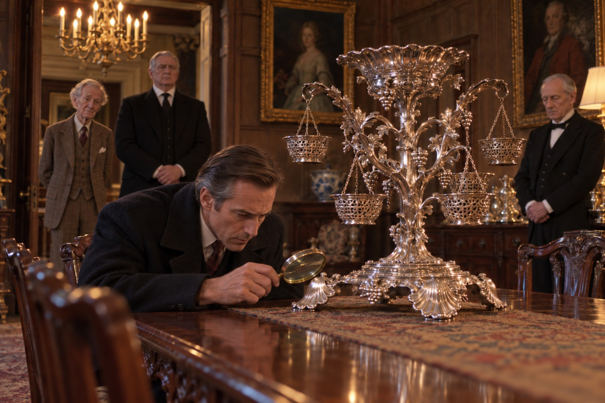

Проба

Глава первая
Отдели примесь от серебра, и выйдет у серебряника сосуд.
— Книга притчей Соломоновых, 25:4
Опись имущества, предназначенного к продаже, составляется в английском загородном доме примерно так же, как составляется завещание: долго, в полной тишине и в присутствии людей, которые делают вид, что их это не касается. В четверг, девятого октября тысяча девятьсот восьмидесятого года, около трёх часов пополудни, в большой столовой Хоксли-Корта, усадьбы лорда Пэррингтона в Котсуолдсе, в нескольких милях за Бёрфордом, таких людей было двое, и только один из них действительно делал вид.
Первым был мистер Эдриан Лэнгдейл, оценщик лондонского аукционного дома «Харкнесс и Тодд», мужчина за сорок, худощавый, с аккуратным пробором и с той особенной бледностью, какая бывает у людей, проводящих жизнь в чужих гостиных при плохом освещении. Он приехал в понедельник и за три дня описал гостиную, библиотеку, две спальни, бильярдную и лестничную площадку, где висели предки, и теперь дошёл до столовой, которую оставлял напоследок, как оставляют напоследок лучшее блюдо, потому что серебро Пэррингтонов было знаменито. Его описывали в путеводителях по Котсуолдсу, его снимали для «Кантри лайф» в тридцатые годы, и про центральную вазу, стоявшую посреди длинного стола красного дерева, в округе говорили так, как говорят о местной церкви: что её стоит посмотреть, если будете проезжать.
Ваза была огромной. Её сделал в царствование Георга Второго лондонский мастер, имя которого произносили в аукционных залах тем же тоном, каким в церкви произносят имена апостолов, и сделал, судя по всему, человеку, которому некуда было девать деньги и нечего было скрывать: серебряная корзина с ажурными стенками стояла на четырёх ногах в виде раковин, из корзины поднимались ветви, а на ветвях висели маленькие корзиночки для фруктов и сладостей, так что вся вещь походила на дерево, которое кто-то вырастил из чистого серебра, а потом раскаялся и принялся его украшать. Чистили её по субботам, вдвоём, и чистили так усердно, что за двести с лишним лет рельеф на раковинах стал мягким, как на старой монете.
Вторым человеком в столовой был Олдфилд, дворецкий, которому было за семьдесят и который служил в этом доме с тех пор, когда лорд Пэррингтон был ещё молодым человеком, ездившим на охоту и танцевавшим на балах в Лондоне. Олдфилд стоял у буфета, сложив руки, и смотрел в окно на мокрый парк с таким видом, будто его здесь не было. Его здесь, впрочем, и не должно было быть: оценщик в помощи не нуждался и сказал об этом ещё в понедельник, очень вежливо. Но Олдфилд держался того мнения, что серебро этого дома не остаётся в комнате с посторонним человеком без присмотра, и мнения своего не менял полвека, так что приходил в столовую каждый раз, когда туда приходил мистер Лэнгдейл, и стоял у буфета, глядя в окно.
Мистер Лэнгдейл работал быстро. Он описал канделябры, соусники, супницу, два подноса с гербом, графины с серебряными горлышками и солонки в виде лебедей, взвесил на маленьких весах, которые привёз с собой в кожаном футляре, всё, что можно было взвесить, и записал вес в тех мерах, в каких серебро взвешивают в Англии со времён короля Генриха, то есть в тройских унциях, которые немного тяжелее обычных и в которых не считают ни сахар, ни муку, а только драгоценные металлы. Записывал он в толстую записную книжку в чёрной клеёнчатой обложке, мелким почерком, и время от времени, ничего не говоря, переносил что-нибудь из книжки на отпечатанный бланк каталога, где у каждой вещи был свой номер лота.
Вазу он оставил последней. Обошёл её дважды, посмотрел на неё сбоку, присев, как смотрят на бильярдный шар перед ударом, потом позвал Олдфилда и попросил помочь её поднять, потому что одному это было не под силу. Вдвоём они перенесли вазу на сукно, расстеленное на конце стола, и положили набок, осторожно, как кладут раненого.
Клеймо на английском серебре ставят не там, где его видно, а там, где его можно найти, если знать, где искать: на донышке, под ободком, на изнанке ножки. Мистер Лэнгдейл знал. Он достал из кармана лупу в роговой оправе, наклонился к одной из раковин, к той, что была ближе к свету, и замер.
Олдфилд смотрел в окно. В парке шёл мелкий дождь, такой, какой в Котсуолдсе идёт в октябре не переставая, и по аллее к службам, нагнув голову, шёл садовник, толкая перед собой тачку с ботвой для свиньи.
Мистер Лэнгдейл не двигался очень долго. Потом он выпрямился, сложил лупу, положил её в карман и, не глядя на дворецкого, сказал, что хотел бы взвесить вазу, если мистер Олдфилд будет так добр подержать весы. Мистер Олдфилд был так добр. Ваза оказалась слишком тяжёлой для маленьких весов, и её взвешивали частями, снимая корзиночки одну за другой, и это заняло ещё полчаса, в течение которых оба они не сказали ни слова, кроме цифр.
Когда вазу вернули на место, мистер Лэнгдейл открыл свою чёрную книжку, записал в неё что-то короткое, подумал и записал ещё что-то, подлиннее. Потом закрыл книжку, убрал её во внутренний карман пиджака и долго разглаживал этот карман ладонью, как разглаживают письмо, которое собираются отправить, но ещё не решили кому.
— Благодарю вас, мистер Олдфилд, — сказал он. — На сегодня, пожалуй, всё.
— Не за что, сэр, — сказал Олдфилд.
Он проводил оценщика до двери, вернулся к столу, поправил вазу, которая и так стояла ровно, и снова встал у буфета. Простоял он там довольно долго, до тех пор, пока в столовую не заглянула горничная спросить, накрывать ли к чаю в малой гостиной, а потом пошёл в буфетную, открыл шкаф, где хранились книги дома, и снял с верхней полки одну, в переплёте из потёртой зелёной кожи, с надписью на корешке, которую давно уже нельзя было прочесть.
Никто не видел, что он в ней искал и нашёл ли.
Мистер Лэнгдейл к чаю не спустился. Он сказал горничной, что у него болит голова, и попросил подать ему чай наверх, а около шести вечера спустился вниз, прошёл через холл к телефону, который стоял в нише под лестницей, и позвонил в Лондон. Разговор был короткий. Потом он позвонил ещё раз, и этот разговор был ещё короче, потому что человека, которому он звонил, не оказалось на месте, и мистер Лэнгдейл попросил передать, что звонил по поводу Хоксли и что будет на месте всю неделю.
За ужином он был весел, много говорил о погоде, хвалил вино, которое не стоило похвал, и рассказал смешную историю о герцогине, которая продала с аукциона собственный портрет, приняв его за портрет свекрови. Лорд Пэррингтон, который ужинал за тем же столом, под той же вазой, смеялся до слёз. Он был единственным в доме, кто никогда не думал о деньгах, и потому единственным, кто мог смеяться над такими историями от души.
Глава вторая
Не учащай входить в дом друга твоего, чтобы он не наскучил тобою и не возненавидел тебя.
— Книга притчей Соломоновых, 25:17
Охота в английском загородном доме начинается не в тот день, когда стреляют, а накануне, когда съезжаются гости, и подлинное мастерство хозяина состоит не в том, чтобы выгнать птицу на стрелков, а в том, чтобы рассадить гостей за ужином так, чтобы к утру никто никого не застрелил нарочно. В Хоксли-Корте этим мастерством владела достопочтенная миссис Мод Стэнвей, сестра лорда Пэррингтона, вдова, которой было за семьдесят и которая вела дом брата с тех пор, как тот овдовел, то есть так давно, что никто уже не помнил, вела ли она его когда-нибудь иначе. Слово «достопочтенная» в Англии полагается дочерям баронов, и миссис Стэнвей носила его, как другие носят орден: не напоминая о нём, но и не позволяя забыть.
Охоту назначили на субботу, одиннадцатое октября, вторую субботу сезона, который на фазана в Англии открывается первого октября и продолжается до первого февраля, а по воскресеньям в это время не стреляют вовсе, так что субботняя охота, если она удаётся, кончается ужином, после которого гости могут спать сколько угодно. Это была последняя охота в Хоксли-Корте, и все об этом знали, хотя вслух этого не говорил никто. Распродажа обстановки была назначена на декабрь, каталог составлял мистер Лэнгдейл, а что будет с самим домом после распродажи, не знал, кажется, никто, кроме наследника.
Наследником был мистер Майлз Пэррингтон, сын покойного младшего брата лорда, человек за сорок, высокий, хорошо одетый и хорошо подстриженный, который работал в Сити, у одного из тех брокеров, чьи конторы помещаются в узких старых домах, а дела в больших новых банках, и говорил о деньгах так, как деревенские люди говорят о погоде: спокойно, со знанием дела и не стесняясь. У лорда Пэррингтона не было детей, и титул, вместе с домом, долгами и всем, что останется после распродажи, должен был со временем перейти к племяннику. Майлз приехал в пятницу к обеду на тёмно-зелёном «Ровере» и привёз с собой двух гостей.
Первым гостем был старший инспектор уголовной полиции Стрейндж, человек крупный, румяный и добродушный, с которым мистер Пэррингтон состоял в одной масонской ложе в Оксфорде и которого пригласил на охоту, как сказал сам старший инспектор жене, «по-братски». Вторым гостем была жена старшего инспектора, Джоан, приглашённая заодно, потому что приглашать одного мужа было бы невежливо, а миссис Стэнвей невежливости не терпела ни в ком, кроме себя. Джоан никогда не была на охоте, никогда не ночевала в доме, где у дверей спален выставляют обувь, чтобы её почистили к утру, и решила, ещё в машине, что будет смотреть на всё это так, как смотрят спектакль, на который достался чужой билет.
К чаю приехали Вистеры. Мистер Сидни Вистер, торговец старинным серебром с Бонд-стрит, был человеком лет шестидесяти, полным, лысым и учтивым, с той грустной вежливостью, которая вырабатывается у людей, сорок лет подряд объясняющих покупателям, почему вещь стоит дороже, чем им хотелось бы. Его фирма называлась «Вистер и сын», и сыном в её названии был когда-то он сам. Дочь его, мисс Аманда Вистер, двадцати с небольшим лет, хорошенькая и решительная, была помолвлена с Перегрином Стэнвеем, сыном миссис Стэнвей, и помолвку эту миссис Стэнвей называла «временным недоразумением», однако только в отсутствие Вистеров.
Перегрин, которого все, кроме матери, звали Перри, вышел встречать невесту к машине без пальто, под дождём, и был, по-видимому, искренне счастлив. Ему было около тридцати. Он работал где-то в Лондоне, по его словам «в рекламе», по словам матери «у каких-то людей», был безобиден, весел, хорошо стрелял, плохо считал и за свою жизнь трижды был помолвлен, причём дважды, как утверждала его мать, по ошибке. На руке мисс Вистер было кольцо с большим зелёным камнем, и Перри, пока нёс её чемодан к двери, успел дважды сказать, что камень изумруд.
Последним, уже в сумерках, приехал гость, которого никто не ждал, кроме миссис Стэнвей.
Это был очень старый джентльмен, около восьмидесяти лет, худой, прямой, в твидовом пальто старого покроя, со светлыми глазами и с выражением лица человека, которого разбудили, сказав, что дом горит, а потом выяснилось, что горит не его дом, но ехать всё равно придётся. Приехал он в старом тёмно-синем автомобиле, большом и чистом, за рулём которого сидел другой старик, ещё старше, в чёрном пальто и котелке, человек, по которому было видно, что он прожил жизнь в чужих домах и не уронил в них ни одной ложки.
Старый джентльмен был однокашником лорда Пэррингтона по Оксфорду. Ещё он был, как вполголоса объяснил мистер Майлз Пэррингтон старшему инспектору Стрейнджу, пока гостей вели наверх, человеком, который в тысяча девятьсот двадцать четвёртом году был ровно одну неделю помолвлен с нынешней миссис Стэнвей, и неделя эта, по словам семейного предания, обошлась ему дороже, чем иным обходится целый брак. Миссис Стэнвей сама написала ему в сентябре, что брату нужна поддержка старых друзей в последнюю охоту, и старый джентльмен приехал, потому что, как сказал он в холле лорду Пэррингтону, когда Мод пишет, что тебе нужна поддержка, лучше приехать, чем ждать, пока она приедет сама.
При виде миссис Стэнвей, вышедшей в холл, он едва заметно вздрогнул, словно от сквозняка, а потом поклонился и поцеловал ей руку с той безупречностью, какая даётся только долгим страхом.
Миссис Стэнвей представила ему гостей. Старшему инспектору Стрейнджу он пожал руку с живым интересом, какой у людей его поколения вызывают полицейские, если те не в форме и не при исполнении. Джоан он улыбнулся. Но когда миссис Стэнвей назвала мистера Вистера, старый джентльмен на мгновение замер с протянутой рукой и переспросил фамилию, тихо и с лёгкой тревогой, как переспрашивают человека, которому послышалось собственное имя там, где его не должно быть. Мистер Вистер повторил по буквам, с привычной грустной вежливостью: так он повторял её всю жизнь, потому что её всю жизнь путали. Старый джентльмен выслушал, кивнул, сказал, что в молодости знал одну семью с очень похожей фамилией и что ничего хорошего из этого знакомства ни для кого не вышло, и с явным облегчением пожал мистеру Вистеру руку.
Ужинали в восемь. Перед ужином в библиотеке, где стоял единственный в доме телевизор, маленький и старый, у которого вечно барахлил звук, мистер Майлз Пэррингтон включил вечерние новости, и все, кроме хозяина, ушедшего, как всегда в этот час, к свинарнику, услышали, как премьер-министр, выступая днём в Брайтоне на конференции своей партии, сказала, что тем, кто ждёт от неё поворота, она советует поворачивать самим, а леди поворачивать не намерена. Зал в Брайтоне встал. Мистер Майлз Пэррингтон коротко засмеялся и сказал, что эта женщина знает, что делает. Мистер Вистер сказал, что за последний год продал больше серебра, чем за пять предыдущих, и всё, что продал, было куплено у людей, которые раньше серебро только покупали. Старший инспектор Стрейндж ничего не сказал, потому что был в гостях. Джоан сказала, что безработных в стране теперь больше двух миллионов, она видела в газете, и в библиотеке ненадолго стало тихо, как бывает тихо, когда за столом сказали правду, которая к столу не относится.
Мистер Лэнгдейл смотрел новости, стоя у двери, и ничего не говорил. Майлз Пэррингтон, проходя мимо него к столу с напитками, задержался на секунду, и они обменялись несколькими словами, которых никто не расслышал из-за телевизора.
За ужином миссис Стэнвей посадила старого джентльмена по правую руку от себя, и он просидел там весь вечер, отвечая на её вопросы с отвагой человека, идущего по минному полю, о котором ему известно, что мины в нём настоящие. Его человек, тот старик, что вёл машину, ужинал внизу, в людской, вместе со слугами дома, и Олдфилд, как потом рассказывала горничная, впервые за двадцать лет сам налил гостю пива.
Глава третья
Пиры устраиваются для удовольствия, и вино веселит жизнь; а за всё отвечает серебро.
— Книга Екклесиаста, 10:19
Суббота выдалась сухой, что для октябрьских Котсуолдсов было почти чудом, и лорд Пэррингтон, выйдя к завтраку, приписал это свинье. Свинья его, породы глостер олд спот, белая, в чёрных пятнах, с ушами, свисающими на глаза так, что она смотрела на мир словно из-под шляпы, звалась Глорианой, весила, по словам хозяина, больше, чем весил он сам, его покойная жена и его покойный отец, вместе взятые, и через месяц должна была в третий раз выйти на окружную выставку в Бёрфорде. Лорд Пэррингтон был убеждён, что Глориана чувствует погоду, и в то утро она чувствовала её хорошо.
Охота в Хоксли-Корте устраивалась так, как устраивалась при отце нынешнего лорда и при его деде, только с каждым разом с меньшим размахом. Стрелков было шестеро: Майлз Пэррингтон, Перри, старший инспектор Стрейндж, мистер Вистер, который стрелял, по его словам, «из вежливости», сосед по имени полковник Феррис, приехавший утром, и старый джентльмен, который стрелять отказался, сославшись на зрение, а на самом деле, как он признался Джоан по дороге к первому загону, потому, что последний раз стрелял в тысяча девятьсот тридцать первом году и попал тогда в шляпу епископа. Лорд Пэррингтон не стрелял никогда. Он шёл за стрелками с палкой, в старом плаще, и называл каждую рощу по имени, как называют родственников.
Загонщиков было девять, все из деревни, и самому младшему было за пятьдесят. Раньше, сказал Джоан тот, что шёл рядом с ней вдоль живой изгороди, загонщиков звали мальчишек, по пять шиллингов за день и обед, а теперь мальчишек нет: одни уехали в Оксфорд, на автозавод в Каули, а других оттуда, говорят, скоро отпустят обратно, и вот тогда, может, и будут снова мальчишки, только платить им придётся не пять шиллингов. Джоан спросила, как его зовут. Его звали Лиллиуайт, он был садовником и свинарём при доме, и сын его с лета сидел без работы.
Джоан шла с загонщиками почти весь день. Миссис Стэнвей, которой об этом доложили, сказала, что жена полицейского, видимо, демократка, и что в её молодости демократки хотя бы не носили резиновых сапог с городским пальто. Джоан ей этого не передали, и правильно сделали, потому что она бы не обиделась, а засмеялась, а этого миссис Стэнвей не простила бы никогда.
Стреляли неровно. Майлз Пэррингтон стрелял хорошо, спокойно и много, как делал всё. Перри стрелял блестяще, когда не разговаривал, и плохо, когда разговаривал, а разговаривал он почти всё время. Мистер Вистер стрелял из вежливости и ни разу не попал. Старший инспектор Стрейндж промахнулся по первым четырём птицам, сказал, что ружьё чужое, промахнулся по пятой, сказал, что солнце в глаза, хотя солнце было за спиной, а шестую убил, и был так этим доволен, что весь обед говорил только о ней.
Мистер Лэнгдейл ходил за стрелками со вторым загоном, без ружья, в длинном городском пальто и в резиновых сапогах, которые ему одолжил Олдфилд, и выглядел в них так, как выглядит в деревне любой лондонец: словно приехал описывать имущество. Он и правда описывал: смотрел на дом с холма, на парк, на пруд с кувшинками под террасой, на старые конюшни, и, как заметила Джоан, раза два что-то записал в чёрную книжку.
Ссора случилась за обедом, который подавали в амбаре у второй рощи, на длинных козлах, покрытых скатертью. Мисс Вистер сняла перчатки, и Перри снова сказал, что камень на её кольце изумруд. Мистер Лэнгдейл, который сидел напротив, посмотрел на кольцо поверх бокала и сказал, очень любезно, что для изумруда камень слишком хорош, а для стекла недостаточно, и что, если мисс Вистер когда-нибудь захочет узнать правду, он с удовольствием посмотрит на него в лупу, совершенно бесплатно.
За столом стало тихо. Мистер Вистер, отец невесты и человек, который знал о камнях больше, чем все сидящие за столом вместе, промолчал, и это молчание было хуже любых слов. Перри покраснел, встал, сказал мистеру Лэнгдейлу, что тот хам, что в его время за такие вещи выводили во двор, и что если мистер Лэнгдейл хочет, то двор вот он. Мистер Лэнгдейл ответил, что время мистера Стэнвея ещё не наступило и, по всей вероятности, не наступит, и что во двор он не пойдёт, потому что у него сапоги чужие. Майлз Пэррингтон, сидевший во главе стола вместо дяди, сказал что-то короткое и резкое, после чего мистер Лэнгдейл извинился перед мисс Вистер, а Перри сел.
Старый джентльмен, который сидел рядом с Джоан, наклонился к ней и сказал вполголоса, что в его время за такое действительно выводили во двор, но обычно выводили того, кто сказал правду.
К ужину все переоделись. Ужин в последний вечер охоты в Хоксли-Корте был всегда парадным: мужчины в чёрных смокингах, женщины в длинном, свечи, серебро, вина из погреба, которые лорд Пэррингтон называл по годам, как называл по именам рощи. Ваза стояла посреди стола, вычищенная к вечеру так, что в ней отражались свечи, и миссис Стэнвей, усаживая гостей, сказала, что в этой вазе отражалось четыре короля и одна королева, и что ни один из них не сидел за этим столом дольше, чем было нужно.
Перри за ужином не было. Он уехал в половине седьмого в Оксфорд, на своей маленькой красной машине, на ужин старого клуба, членом которого состоял со студенческих лет и который каждый октябрь собирался в одном и том же отеле на Бомонт-стрит, чтобы есть плохое мясо и петь хорошие песни. Мать сказала ему, что ехать в такой вечер неприлично. Перри ответил, что после того, что ему сегодня сказали, неприлично не ехать, и что вернётся он к завтраку. Мисс Вистер осталась, потому что её отец остался, и весь ужин молчала, крутя на пальце кольцо.
После ужина мужчины, как полагалось, остались за портвейном, а женщины ушли в гостиную. Портвейн пили недолго. Около десяти мистер Лэнгдейл попросил его извинить и вышел. В половине одиннадцатого лорд Пэррингтон, как каждый вечер, взял фонарь и пошёл пожелать доброй ночи Глориане. Старый джентльмен ушёл к себе около одиннадцати, после того как миссис Стэнвей предложила ему партию в безик, а он сказал, что у него, к большому сожалению, болит голова, и добавил, что болит она с тысяча девятьсот двадцать четвёртого года. Мистер Вистер с дочерью поднялись наверх почти сразу за ним.
Около четверти двенадцатого Майлз Пэррингтон сказал старшему инспектору Стрейнджу, что пойдёт проверит ружья в оружейной, потому что не доверяет парню, который их чистил, и предложил Стрейнджу последнюю сигару. Стрейндж от сигары отказался, потому что Джоан ждала его наверх, и пошёл наверх.
Ночь была тихая и тёмная, без луны. Из окна спальни, которую отвели Стрейнджам, был виден только чёрный парк и под самой террасой, неясно, светлое пятно пруда с кувшинками, на котором лежали листья. Старший инспектор Стрейндж, раздеваясь, сказал жене, что охота удалась, что Майлз отличный малый, а Джоан, глядя в окно, сказала, что в этом доме ей почему-то всё время хочется пересчитать ложки. Стрейндж засмеялся и выставил свои ботинки за дверь, потому что так было положено.
Глава четвёртая
Праведный печётся и о жизни скота своего, сердце же нечестивых жестоко.
— Книга притчей Соломоновых, 12:10
Лорд Пэррингтон вставал в шесть, летом и зимой, в будни и по праздникам, и первым делом шёл к Глориане, потому что считал, что свинья, как и человек, должна начинать день с того, что её кто-то любит. В воскресенье, двенадцатого октября, он вышел из дома через садовую дверь в начале седьмого, в старом плаще поверх пижамы и в резиновых сапогах, с фонарём, потому что было ещё темно, и пошёл к свинарнику кратчайшей дорогой, по террасе и вниз по ступеням мимо пруда.
На полпути вниз он остановился, потому что фонарь выхватил что-то светлое у края воды.
Это был мистер Лэнгдейл. Он лежал лицом вниз у самого берега, там, где пруд был мелок и зарос, головой и плечами в воде, среди листьев кувшинок, а ногами на траве, и был в том же смокинге, в котором сидел вечером за ужином, только без одного лакированного ботинка. Ботинок плавал рядом, носком вверх, как маленькая чёрная лодка.
Лорд Пэррингтон не сразу понял, что видит. Потом понял, поставил фонарь на ступеньку, сошёл к воде, попытался перевернуть оценщика, не смог, потому что был стар, а тот был тяжёл и мокр, постоял над ним с минуту, сняв с головы шапку, а потом пошёл к свинарнику, потому что Глориана ждала, и дал ей ботвы, и только после этого вернулся в дом и разбудил Олдфилда. Позже, когда старший инспектор Стрейндж спросил его, почему он сначала пошёл к свинье, лорд Пэррингтон очень удивился вопросу и объяснил, что мистеру Лэнгдейлу помочь было уже нельзя, а Глориане было можно.
Олдфилд разбудил миссис Стэнвей, миссис Стэнвей разбудила Майлза Пэррингтона, а Майлз Пэррингтон, накинув халат, постучал в дверь к старшему инспектору Стрейнджу, и Стрейндж, в пижаме, в пальто поверх пижамы и в ботинках, которые ещё не успели почистить, спустился к пруду, посмотрел, наклонился, потрогал шею, выпрямился и сказал то, что говорят в таких случаях все полицейские мира, когда они в гостях: что ничего нельзя трогать.
Потом он позвонил в Кидлингтон, в управление полиции долины Темзы, и долго объяснял дежурному, кто он такой, где находится и почему звонит в семь утра в воскресенье из дома пэра.
Дело это старшему инспектору Стрейнджу вести было нельзя, и он понимал это лучше всех. Он был гостем в доме, он сидел за одним столом с покойным, он пил портвейн хозяина и всю субботу ходил по парку с ружьём, которое ему одолжил наследник. Он был, иными словами, свидетелем, а свидетель не может расследовать то, что видел. К девяти утра из Кидлингтона ответили, что дело поручено инспектору Морсу, который будет на месте к одиннадцати.
Стрейндж, положив трубку, некоторое время стоял в нише под лестницей, глядя на телефон, а потом поднялся наверх сказать жене.
— Морс, — сказала Джоан и засмеялась, хотя смеяться было не над чем. — Ну конечно. Кого же ещё.
Инспектор Морс узнал о деле в половине десятого, когда звонок застал его дома, на Норт-Оксфорд, в халате, за кроссвордом в воскресной газете, который он решал, по своему обыкновению, ручкой, а не карандашом, и в котором оставалось три слова. Дежурный сержант сказал, что в поместье под Бёрфордом найден мёртвым человек, что на месте старший инспектор Стрейндж, который там в гостях, и что старший инспектор Стрейндж просил передать инспектору Морсу, что ему очень жаль, но больше послать некого.
Морс положил трубку и некоторое время смотрел на кроссворд. Ему было за сорок, он был инспектором второй год, пил пиво не потому, что хотел, а потому, что, как он объяснял себе, оно помогало думать, и считал воскресенье единственным днём недели, который принадлежал ему по праву. Он знал, что Стрейнджа позвали на эту охоту. Его, Морса, на неё не звали, и он знал почему: его вообще никуда не звали, где собирались люди, носящие одинаковые запонки, и если бы позвали, он бы не поехал. Но знать, что не поехал бы, и не быть позванным, это, как давно заметил Морс, две совершенно разные вещи, и вторая обиднее.
Он вписал в кроссворд одно из трёх слов, оделся, вывел из гаража «Ягуар» и позвонил по дороге сержанту.
Сержантом у Морса в ту осень был Квентин Прайор, молодой человек около тридцати, сын фермера из-под Банбери, большой, рыжеватый, медлительный, который пришёл в уголовную полицию из сельского участка в июне и до сих пор говорил о преступниках с той же спокойной обстоятельностью, с какой его отец говорил о погоде и ценах на ячмень. Имя Квентин ему дала мать, которая всю жизнь читала романы о графах, и Прайор носил его, как носят костюм с чужого плеча: не жалуясь, но и не делая вида, что он сидит хорошо. Он разбирался в ружьях, собаках, свиньях и тракторах лучше, чем в людях, и Морс, поначалу встретивший его с обычным своим раздражением, к осени начал подозревать, что в некоторых делах это не самый плохой порядок знаний.
Они встретились у поворота на Бёрфорд и дальше ехали вместе, в «Ягуаре», потому что машина Прайора, по словам Морса, пахла силосом.
Хоксли-Корт стоял в неглубокой долине, в конце длинной аллеи из старых буков, и был, как большинство котсуолдских домов, сложен из того медового камня, который в солнечный день светится изнутри, а в пасмурный выглядит так, словно его забыли убрать в шкаф. День был пасмурный. Дом был большой, неровный, построенный в три приёма, и вид имел одновременно гордый и смущённый, как у старика, который надел парадный костюм и обнаружил, что тот стал ему велик. Перед крыльцом стояли полицейские машины из Бёрфорда, тёмно-зелёный «Ровер», маленькая серая машина Вистеров, большой тёмно-синий автомобиль старого образца, старательно вымытый, и ещё одна, совсем старая, с открытым капотом, на которой, как потом выяснилось, ездил полковник Феррис.
Прайор, вылезая из «Ягуара», посмотрел на тёмно-синий автомобиль долгим взглядом знатока и сказал, что таких уже не делают.
— Людей тоже, — сказал Морс, глядя на крыльцо.
На крыльце стоял очень старый человек в чёрном костюме и смотрел на них так, как смотрят на погоду, которую нельзя изменить, но можно встретить достойно. Это был не дворецкий дома. Дворецкий дома, как Морс узнал через минуту, был занят наверху, а этот старик просто вышел посмотреть, кого прислали, и, посмотрев, кивнул так незаметно, что Морс так и не понял, кивнул ли он им или чему-то своему.
Глава пятая
Плавильня — для серебра, и горнило — для золота, а сердца испытывает Господь.
— Книга притчей Соломоновых, 17:3
Доктор Макс де Брин, патологоанатом, приехал из Оксфорда на полчаса раньше Морса и встретил его у пруда тем взглядом поверх очков, каким встречают человека, опоздавшего к началу спектакля, который ему всё равно не понравится. Он стоял на коленях на клеёнке, расстеленной на мокрой траве, в старом твидовом пиджаке и в нарукавниках, а тело, уже вынутое из воды и перевёрнутое, лежало перед ним на другой клеёнке, и лицо мистера Лэнгдейла, которое при жизни было бледным, теперь было просто серым, как камень дома.
— Утонул, — сказал де Брин, не здороваясь. — Но утонул не сам. Сначала его ударили. Сзади, по голове, чуть выше левого уха, чем-то тяжёлым и гладким, без острых краёв. Не камнем, камень оставил бы грязь. Потом он упал вперёд, лицом в воду, а вода здесь, если вы заметили, мне по колено. Будь он в сознании, он бы встал. Он был без сознания и не встал. Ну и ещё одно: кто-то помог ему лечь поудобнее.
— Когда? — спросил Морс.
— Вы всегда спрашиваете когда, — сказал де Брин, поднимаясь и отряхивая колени. — Ночью. Ночь была холодная, вода холоднее. Около полуночи, плюс-минус час. Если вы скажете мне, когда он ушёл из-за стола и когда его видели в последний раз, я скажу вам, что вы правы.
Морс посмотрел на пруд. Пруд был небольшой, овальный, обложенный по краю старым камнем, поросшим мхом, и почти весь затянутый листьями кувшинок, уже жёлтыми и бурыми, а у дальнего берега, под ивой, поверх листьев плавала мелкая зелёная ряска, такая, какая бывает только в стоячей воде, куда никто не заглядывает. От террасы к пруду спускались широкие ступени, а от пруда к свинарнику и службам шла дорожка, обсаженная тисами, и в конце этой дорожки, за низкой стеной, виднелась крыша свинарника и над ней, медленно, поднимался пар.
На траве у берега не было ничего, что можно было бы назвать следом: трава была густая, мокрая и, с тех пор как лорд Пэррингтон в шесть утра попытался перевернуть тело, истоптана полудюжиной людей, включая самого старшего инспектора Стрейнджа, который теперь стоял на ступенях террасы, в пальто, руки в карманах, и смотрел на Морса с выражением человека, который пришёл к зубному врачу и обнаружил, что врач его школьный враг.
Морс поднялся к нему.
— Сэр.
— Морс. — Стрейндж кивнул. — Не говори ничего. Я знаю.
— Я ничего и не собирался.
— Собирался. — Стрейндж вынул руку из кармана и потёр подбородок. — Слушай. Я здесь в гостях, Майлз — мой брат по ложе, я сидел с этим беднягой за одним столом и пил портвейн, который мне наливал хозяин. Я свидетель, и всё. Делай что нужно. Только, ради бога, делай это деликатно. Это не паб на Коули-роуд. Здесь старик, у которого через два месяца продают последние ложки, здесь его сестра, которая съест тебя на завтрак и не заметит, и здесь гости, которые в понедельник утром должны быть в Лондоне.
— Гостям придётся остаться.
— Я так и сказал Майлзу. — Стрейндж помолчал. — Он понял.
Морс посмотрел на дом. В окнах второго этажа, одно за другим, как карты в пасьянсе, появлялись и исчезали лица.
Тело увезли в Оксфорд около полудня. Морс до этого успел осмотреть карманы смокинга, которые де Брин осмотрел до него, но которые Морс, по своему обыкновению, осмотрел ещё раз, как перечитывают письмо, в котором что-то не сходится. В карманах был носовой платок, бумажник с двадцатью фунтами и визитными карточками фирмы «Харкнесс и Тодд», ключ от комнаты, коробок спичек и лупа в роговой оправе. Записной книжки не было.
— Он её всё время носил, — сказала Джоан, когда Морс, проходя через холл, спросил её о книжке. Она сидела на скамье у двери, в пальто, и ждала мужа, который пошёл к Майлзу Пэррингтону объяснять, почему гостям придётся остаться. — Чёрная такая, клеёнчатая. Он вчера весь день что-то в ней записывал, даже на охоте. На дом смотрел и записывал. Я ещё подумала, что так, наверное, смотрят на дом, когда его покупают.
— Или когда его продают, — сказал Морс.
— Или так. — Джоан посмотрела на него. — Вы похудели.
— Вы это говорили пять лет назад.
— Значит, и пять лет назад похудели. — Она помолчала. — Морс, не надо его мучить. Джима. Он не виноват, что его позвали.
— Я знаю, — сказал Морс и пошёл наверх.
В комнате мистера Лэнгдейла, в восточном крыле, было чисто, холодно и пусто, как в гостиничном номере в последний день. На столе у окна лежали стопкой бланки каталога, отпечатанные на машинке под копирку, сверху первые экземпляры, снизу копии, на бланках стояли номера лотов от первого до двести двенадцатого, и последним, двести двенадцатым, шла центральная ваза. Рядом лежал кожаный футляр с весами, коробка с гирьками, бутылка аспирина и роман в мягкой обложке, заложенный на середине. Записной книжки не было и здесь. Не было её ни в чемодане, ни в карманах второго костюма, ни под подушкой, ни в ящиках стола, ни, как через час доложил Прайор, во всём восточном крыле.
Морс сел на кровать и долго смотрел на стопку бланков.
— Человек, который всё записывает, — сказал он наконец, — записывает и то, о чём лучше не писать. Найдите мне эту книжку, сержант, и я скажу вам, кто его убил.
— А если её утопили? — спросил Прайор. — В пруду?
— Тогда спустим пруд.
Прайор подумал о пруде, о кувшинках, о рыбе, которая наверняка в нём водилась, и о лорде, который, по всей вероятности, этой рыбе дал имена, и ничего не сказал.
Семью и гостей собрали в библиотеке к часу дня. Миссис Стэнвей вошла последней, когда остальные уже сидели, и Морс, который стоял у камина, понял, ещё до того, как их представили, что разговор с этой женщиной будет похож на допрос, только неизвестно, кто кого допрашивает. Она была высокая, сухая, прямая, в сером, с ниткой жемчуга и с лицом, которое лет пятьдесят назад было, вероятно, красивым, а теперь было непререкаемым.
— Вы инспектор, — сказала она.
— Да, мэм.
— Не «мэм». Миссис Стэнвей. «Мэм» говорят королеве. — Она села в кресло, которое ей никто не подвигал и которое, очевидно, всегда было её креслом. — Хотите хересу?
Было начало второго, и в библиотеке, на подносе у окна, действительно стоял графин с хересом и бокалы, а рядом с подносом стоял Олдфилд, совершенно неподвижный.
— Нет, благодарю вас.
— Вы не пьёте?
— Пью, — сказал Морс. — Но не херес.
Миссис Стэнвей посмотрела на него так, будто он признался, что ест рыбу ножом, и сказала, что в таком случае не будет его задерживать, а он может задавать свои вопросы.
Вопросы он задавал около часа. Ответы были такие, какие бывают всегда, когда в доме убит человек, которого никто не знал как следует: все видели его за ужином, все слышали, как он ушёл около десяти, никто не видел, куда он пошёл, никто не выходил из дома после одиннадцати, кроме хозяина, который ходил к свинье, и Майлза Пэррингтона, который ходил в оружейную, а оружейная, как выяснилось, была в боковом крыле, у садовой двери, ближе всего к пруду. Майлз Пэррингтон сказал об этом сам, раньше, чем его спросили, и сказал так спокойно и так подробно, что Морс записал это в блокнот и подчеркнул.
Перегрина Стэнвея в библиотеке не было. К завтраку, как обещал, он не вернулся, и мать на вопрос Морса ответила, что её сын в Оксфорде, на ужине своего клуба, что ужины эти кончаются в разное время и в разных местах и что она давно не задаёт ему вопросов о том, где он ночует, потому что ответы её не устраивают.
— Он ссорился с покойным, — сказал Морс.
— Мой сын ссорится со всеми, — сказала миссис Стэнвей. — Убивает он только фазанов. И то не всех, в которых целится.
Старый джентльмен, который сидел в самом дальнем углу библиотеки, у шкафа с энциклопедией, и за весь час не сказал ни слова, при этих словах тихо кашлянул в кулак, и Морс так и не понял, был ли это кашель.
Когда библиотека опустела, Морс спустился вниз, в людскую, потому что хотел поговорить с прислугой, а прислугу, как он знал из долгого опыта, лучше всего спрашивать там, где она не стоит по стойке смирно. Людская помещалась в полуподвале, под кухней, и была длинной комнатой с низким потолком, со скоблёным столом во всю длину, с медными кастрюлями по стенам и с доской, на которой висели звонки из всех комнат дома, каждый с табличкой: «Библиотека», «Малая гостиная», «Голубая спальня», «Его светлость». Звонки висели неподвижно. В окне, выходившем во двор, было видно только ноги тех, кто ходил по двору.
За столом никого не было, кроме старика в чёрном, того самого, что утром стоял на крыльце. Перед ним лежала раскрытая толстая книга, очень старая, в переплёте без надписи, и стоял стакан воды. При виде Морса он поднялся.
— Сидите, — сказал Морс.
— Благодарю вас, сэр. Мистер Олдфилд наверху, у его светлости. Если вы позволите, я передам ему, что вы его искали.
— Вы не здешний.
— Нет, сэр. Я сопровождаю джентльмена, который приехал в пятницу. — Старик помолчал, глядя на Морса, и в его взгляде было что-то, чего Морс не мог назвать, нечто среднее между оценкой и сочувствием. — Если позволите, сэр, вы не пили наверху хереса.
— Откуда вы знаете?
— Это видно, сэр. — Старик наклонил голову. — У нас здесь, внизу, есть пиво. Местное, из Хука-Нортона. Мистер Олдфилд держит бочонок для людей. Если вы не сочтёте это неуместным.
Морс не счёл это неуместным. Старик принёс ему пинту в высоком стеклянном стакане, поставил на стол, отступил на шаг и вернулся к своей книге. Морс сделал первый глоток, и пиво было хорошее, тёмное, с горчинкой, именно такое, какое нужно, когда наверху в доме лежат шесть человек, каждый из которых, возможно, лжёт, а внизу, в подвале, звонки на стене висят неподвижно, как вопросы, на которые никто не собирается отвечать.
Книга, которую читал старик, лежала корешком к Морсу, и Морс, по привычке, прочёл, что было на корешке, и с трудом удержался, чтобы не поднять брови. Это был Спиноза. «Этика», старое издание, на латыни.
Глава шестая
Лучше жить в углу на кровле, нежели со сварливою женою в пространном доме.
— Книга притчей Соломоновых, 21:9
Перегрин Стэнвей вернулся в Хоксли-Корт в воскресенье около трёх часов дня, на такси из Оксфорда, без пальто, в смокинге, в котором ушёл на ужин, с галстуком в кармане и с лицом человека, который всю ночь видел сны, а наутро обнаружил, что не все они были снами. Красной машины у него не было. На вопрос матери, где машина, он ответил, что машина у приятеля, а на вопрос Морса, у какого приятеля и где он ночевал, ответил, что ночевал у того же приятеля, и что имя приятеля он назвать не может, потому что это дело чести.
— Чьей чести? — спросил Морс.
— Приятеля, — сказал Перри и покраснел.
Они разговаривали в малой гостиной, куда Морс попросил его прийти, как только миссис Стэнвей, встретившая сына в холле, кончила говорить ему то, что матери говорят сыновьям, вернувшимся домой на такси без пальто, и Морс, которому пришлось подождать за дверью, услышал из этого разговора достаточно, чтобы понять, почему Перри ссорится со всеми. Сам Перри сидел теперь на краешке дивана, крутил в руках галстук и смотрел на Морса с той открытой, почти собачьей тревогой, с какой смотрят люди, совершенно не способные лгать и всё-таки лгущие.
Новость о мистере Лэнгдейле он узнал от шофёра такси, у ворот, где стояла полицейская машина, и узнал, очевидно, впервые: Морс видел достаточно людей, узнающих о смерти, чтобы отличить удивление от изображения удивления, и удивление Перри было настоящим. Но, удивившись, Перри тут же сказал, что Лэнгдейл был хам, что он жалеет, что не вывел его во двор, и что теперь, разумеется, уже никогда не выведет, и Морс записал это в блокнот, не подчеркнув.
Мотив у Перри был: при свидетелях, за обедом, оценщик назвал камень его невесты стеклом и предложил это доказать. Алиби у Перри не было никакого, кроме приятеля, которого нельзя назвать. Ушёл он из дома в половине седьмого, и никто, кроме него самого, не мог подтвердить, что он доехал до Оксфорда, что был на ужине и что ночью не вернулся в Хоксли-Корт, оставив машину где-нибудь на дороге, и не спустился к пруду. От Оксфорда до Бёрфорда двадцать миль. На маленькой красной машине, по пустой ночной дороге, это полчаса.
— Вы понимаете, что это выглядит плохо? — спросил Морс.
— Понимаю, — сказал Перри. — Но это ничего не меняет. Слово есть слово.
Морс подумал, что последний человек, от которого он слышал эту фразу, сидел в тюрьме за убийство, но вслух этого не сказал.
Вечером, после ужина, которого Морс не ел, а Прайор ел в людской и потом с почтением говорил о пироге с дичью, Морс попросил у Майлза Пэррингтона список гостей клубного ужина, и Майлз, который знал, о каком клубе речь, сказал, что такого списка не существует в природе и что члены этого клуба скорее признаются в убийстве, чем в том, что были на этом ужине. Он сказал это с улыбкой и добавил, что Перри, конечно, болван, но не убийца. Морс записал и это.
Утром в понедельник Перри опять исчез. Он уехал из дома в восемь утра на велосипеде садовника, сказав горничной, что ему надо в Бёрфорд, на автобус, по срочному делу, и не вернулся ни к завтраку, ни к обеду.
Миссис Стэнвей восприняла это так, как восприняла бы известие о том, что в доме опять завелись крысы: с отвращением, но без удивления. Мисс Вистер, которая со вчерашнего дня почти не выходила из своей комнаты, спустилась в холл, в пальто, с чемоданом, и объявила отцу, что уезжает в Лондон, и отцу понадобилось полчаса и, как подозревал Морс, обещание чего-то очень дорогого, чтобы уговорить её подождать до вечера, тем более что инспектор её не отпускал. Майлз Пэррингтон позвонил в Лондон, в свою контору, и долго объяснял кому-то, что задерживается по семейным обстоятельствам. Лорд Пэррингтон ушёл к Глориане и не вернулся к обеду. Старый джентльмен сидел в библиотеке и читал «Таймс», и вид у него был такой, словно всё это он уже где-то видел, и не раз.
Прайора Морс ещё в воскресенье вечером отправил в Оксфорд, на Сент-Олдейтс, в центральный участок, проверить, не случилось ли чего-нибудь с субботы на воскресенье с молодыми людьми в смокингах. Прайор вернулся в понедельник около трёх часов дня, вошёл в малую гостиную, где Морс сидел над копиями каталога, и остановился у двери с видом человека, который принёс хорошую новость, но не уверен, что её захотят услышать.
— Ну? — сказал Морс.
— В субботу в одиннадцать часов пять минут вечера, — сказал Прайор, читая по своему блокноту, — констебль Хэрроп, патрулируя Корнмаркет, был остановлен молодым человеком в смокинге, который, по словам констебля, спросил, который час, а пока констебль смотрел на часы, снял с него шлем и побежал с ним к Карфаксу. Задержан у Карфакса другим констеблем через две минуты. Сопротивления не оказывал. Пел. Доставлен на Сент-Олдейтс в одиннадцать двадцать, назвался Эдвином Смитом, адреса не дал, ночь провёл в камере. В воскресенье утром отпущен под залог до суда. Суд сегодня, в десять утра. — Прайор поднял глаза. — Я был в суде, сэр. Он пришёл. На велосипеде.
— Эдвин Смит, — сказал Морс.
— В его вещах, которые описали при задержании, был ключ от машины с брелоком, на брелоке выгравировано «П. С.» и адрес, этот. Машину нашли утром на Бомонт-стрит, у отеля, на неё уже выписали штраф за стоянку. Красная. — Прайор помолчал. — Судья, сэр, выписал ему штраф и сказал, что в его время за такое давали пять фунтов, а сейчас всё дорожает.
Морс долго смотрел на сержанта. Потом на каталог. Потом на окно, за которым по аллее, медленно, на велосипеде садовника, возвращался домой молодой человек без пальто.
— Значит, с одиннадцати двадцати он был в камере, — сказал Морс.
— До восьми утра в воскресенье, сэр. Камеру открывали дважды, оба раза он спал. Дежурный сержант сказал, что храпел он, как благородный.
Перри, когда Морс встретил его на крыльце и назвал Эдвином Смитом, сел на ступеньку и закрыл лицо руками.
— Только не говорите матери, — сказал он сквозь пальцы.
— Почему Эдвин Смит?
— Не знаю. Первое, что пришло в голову. — Перри поднял лицо. — Понимаете, я хотел... это традиция. В клубе. Кто снимет шлем, тот... ну, неважно. Я не снимал никогда, я вообще не по этой части, а тут подумал, после вчерашнего, после этого Лэнгдейла, что если уж я ни на что не годен, так хоть шлем... — Он махнул рукой. — Глупо.
— Глупо, — согласился Морс. — Но это алиби.
Старый джентльмен, который, оказывается, стоял всё это время в дверях за спиной у Морса с газетой в руке, кашлянул, и на этот раз Морс был уверен, что это не кашель.
— Пять фунтов, — сказал старый джентльмен мягко. — В мои годы, в ночь Лодочных гонок, это стоило пять фунтов. Участок на Вайн-стрит, если мне не изменяет память, а наутро очень строгий судья. — Он посмотрел на Перри с выражением, в котором было что-то очень похожее на профессиональное уважение. — Сколько вам дали, мой мальчик?
— Двадцать пять, — сказал Перри.
— Инфляция, — сказал старый джентльмен, кивнул Морсу и ушёл в дом.
Глава седьмая
Неверные весы — мерзость пред Господом, но правильный вес угоден Ему.
— Книга притчей Соломоновых, 11:1
Человек, составляющий опись чужого имущества, оставляет после себя больше, чем ему кажется, потому что опись говорит не только о вещах, но и о том, кто их описывал: где он торопился, где задерживался, что взвесил дважды и о чём не написал ничего. Морс провёл над каталогом мистера Лэнгдейла почти весь понедельник и большую часть ночи на вторник, и к утру знал о покойном, как ему казалось, больше, чем знали те, кто ужинал с ним три вечера подряд.
Мистер Лэнгдейл был аккуратен, точен, сух и не любил прилагательных. Двести двенадцать лотов, отпечатанных на машинке через копирку, шли по комнатам, как шёл, вероятно, он сам, и в каждом стояло одно и то же: что за вещь, из чего, когда и кем сделана, где клеймо, сколько весит, во сколько её следует оценить. Картины он описывал коротко и осторожно, мебель охотно и подробно, а серебро так, как описывают лошадь на ярмарке: зубы, ноги, вес, родословная. Вес он ставил везде, где мог, в тройских унциях, и Морс, который до той ночи весьма смутно представлял себе, что такое тройская унция, к утру знал, что она немного тяжелее обычной, что в фунте их двенадцать, а не шестнадцать, и что серебро в Англии взвешивают в них со Средних веков, потому что серебро, как и правда, требует отдельных весов.
Двести двенадцатым лотом шла центральная ваза. Описание её было длинным, длиннее, чем у всех остальных вещей, с перечнем раковин, ветвей и корзиночек, с упоминанием мастера и года, с оценкой, от которой у Прайора, читавшего через плечо Морса, приоткрылся рот. Вес был указан общий, со всеми корзиночками: двести восемьдесят семь унций.
Последняя строчка в описании была короче остальных. В ней значилось: «Клеймо см. в описи». И больше ничего.
Морс перечитал её раз десять. Ни в одном другом лоте этой строчки не было. В других лотах клеймо описывалось тут же, где стояло, какое было, хорошо ли сохранилось. Здесь мистер Лэнгдейл отослал читателя к какой-то описи, которой в его бумагах не было, и Морс, глядя на эти три слова, вспомнил чёрную клеёнчатую книжку, которую покойный, по словам Джоан, носил с собой даже на охоте.
— Опись, — сказал он. — Какая опись?
— Может, у них в доме своя есть? — сказал Прайор. — У нас на ферме отец всё записывал. Каждый мешок, каждую свинью. Тетрадь у него была, ещё дедова.
Во вторник утром Морс позвонил в Лондон, в «Харкнесс и Тодд», и после нескольких переключений попал к пожилому джентльмену с голосом, как старое кресло, который назвался мистером Харкнессом и сказал, что глубоко потрясён, что Лэнгдейл служил у них девятнадцать лет и был лучшим оценщиком серебра, какого фирма знала после войны, и что в четверг вечером Лэнгдейл действительно звонил, спрашивал именно его, мистера Харкнесса, но мистер Харкнесс был в тот вечер на обеде в Гилдхолле, и Лэнгдейлу сказали, чтобы он позвонил в пятницу. В пятницу Лэнгдейл не позвонил.
— Он сказал, зачем звонил?
— Только «по поводу Хоксли», инспектор. И что он будет там всю неделю. — Мистер Харкнесс помолчал. — Видите ли, в нашем деле, когда оценщик звонит вечером главе фирмы, а не секретарю, это обычно означает, что он нашёл что-то, о чём не хочет говорить секретарю.
— Например?
— Например, что вещь не та, за которую её выдают. Или что она слишком хороша, чтобы продавать её с аукциона в декабре, и её следует предложить музею. Или, — мистер Харкнесс опять помолчал, — что хозяин вещи не тот, кто её продаёт. Бывает всякое, инспектор.
— Вы знали, что он уже оценивал эту коллекцию раньше?
— Раньше? — Голос в трубке стал осторожнее. — Нет, инспектор. В наших книгах об этом ничего нет. Но Лэнгдейл иногда, как бы это сказать, давал частные консультации. Не от фирмы. Мы смотрели на это сквозь пальцы. Все так делают.
Морс поблагодарил, повесил трубку и некоторое время сидел в нише под лестницей, глядя на телефон. Потом пошёл искать Олдфилда.
Дворецкий был в буфетной, маленькой комнате рядом со столовой, где за стеклом высоких шкафов стояло серебро, которое не стояло на столе, и где пахло полиролью и старым деревом. Он чистил ножи, и при виде Морса отложил тряпку, вытер руки и выпрямился.
— Мистер Олдфилд, в доме ведётся опись серебра?
Дворецкий посмотрел на него очень спокойно.
— Ведётся, сэр.
— Можно на неё взглянуть?
Олдфилд помолчал. Потом подошёл к шкафу у стены, открыл дверцу, снял с верхней полки книгу в переплёте из потёртой зелёной кожи и положил её на стол перед Морсом, раскрыв на первой странице. На первой странице, выцветшими чернилами, каллиграфическим почерком, каким писали до войны, той, первой, значилось: «Опись столового и парадного серебра Хоксли-Корта, составленная в январе 1912 года Альбертом Чивером, дворецким, по распоряжению его светлости».
— Мистер Чивер был моим предшественником, сэр, — сказал Олдфилд. — Я служил у него младшим лакеем. После его смерти книгу веду я.
Морс листал. Книга была толстая, страницы разлинованы от руки, и на каждой странице, в столбцах, шли вещи: название, описание, клеймо, вес, а справа, в узкой графе, пометки разными чернилами и разными почерками за шестьдесят восемь лет: «Чищено», «Отдано в починку», «Возвращено», «Утеряно при переезде в город, 1923, взыскано с носильщика», «Подарено её светлостью на свадьбу мисс Мод, 1922». Центральная ваза стояла на третьей странице, первой строкой, и описание её занимало пол-листа, а в графе веса стояло: триста двенадцать унций.
Морс смотрел на эту цифру долго. Потом достал из кармана сложенную копию двести двенадцатого лота и положил рядом. Двести восемьдесят семь. Триста двенадцать. Разница в двадцать пять унций, больше двух фунтов серебра, больше, чем весила любая из маленьких корзиночек, висевших на ветвях.
— Здесь расхождение, — сказал он.
— Вижу, сэр, — сказал Олдфилд.
— Можно было ошибиться при взвешивании? Ваза большая, её взвешивали частями. Мистер Лэнгдейл мог что-то забыть.
— Мистер Лэнгдейл ничего не забывал, сэр. Я держал весы.
— Тогда, может быть, ошибся мистер Чивер?
— Мистер Чивер, — сказал Олдфилд с тем же спокойствием, — никогда в жизни не ошибся ни на унцию, сэр. Он однажды заметил, что из сервиза пропала одна кофейная ложечка, по тому, что ящик стал легче.
Морс поднял на него глаза. Дворецкий смотрел в окно.
— Тогда как вы объясните разницу?
— Я её не объясняю, сэр, — сказал Олдфилд. — Я её вижу.
Морс закрыл книгу. Ему казалось, что он держит в руках что-то важное, но держит не за тот конец, как держат ружьё, которое никогда раньше не держали. Он видел цифры, видел расхождение, видел, что дворецкий знает больше, чем говорит, и не видел, что из этого следует. Ваза стояла в столовой, за стеной, огромная и сияющая, и весила на двадцать пять унций меньше, чем шестьдесят восемь лет назад, и это могло значить что угодно: что её чинили, что её неправильно взвесили, что кто-то когда-то отпилил от неё кусок и запаял так, что никто не заметил. Морс не знал, что это значило. Он знал только, что оценщик, найдя это, позвонил в Лондон главе фирмы, а через два дня лежал лицом в пруду.
Он попросил разрешения взять книгу с собой. Олдфилд, помолчав, разрешил.
Глава восьмая
Верный в малом и во многом верен, а неверный в малом неверен и во многом.
— Евангелие от Луки, 16:10
Горничная, которую звали Глэдис Кобб и которой было за пятьдесят, служила в Хоксли-Корте тридцать лет, и за эти тридцать лет у неё сложилось твёрдое мнение обо всех, кто в этом доме жил, бывал и умирал. Мнение о мистере Олдфилде у неё было самое высокое, и именно поэтому она рассказала Морсу то, что рассказала, с таким видом, словно выдавала собственного отца.
В четверг, сказала она, около четырёх, она пошла в столовую спросить, накрывать ли к чаю в малой гостиной, и застала мистера Олдфилда одного, у вазы. Мистер Лэнгдейл уже ушёл. А мистер Олдфилд стоял у стола и смотрел на вазу так, сказала Глэдис, как смотрят на покойника, которого очень любили и о котором что-то узнали после похорон. Он не ответил ей про чай. Он вообще, кажется, её не услышал. Потом, позже, она видела, как он сидел в буфетной с зелёной книгой и ничего в ней не писал, а только держал руку на странице, будто её придерживал. А в субботу ночью, около полуночи, когда она спустилась на кухню за грелкой для мисс Вистер, в буфетной горел свет, и дверь во двор, та, что от буфетной ведёт наружу к службам и к пруду, была не заперта, хотя мистер Олдфилд всю жизнь запирал её сам, в десять, и ключ уносил к себе.
— Вы его видели? В буфетной?
— Нет, сэр. — Глэдис опустила глаза. — Только свет. И дверь.
Морс поблагодарил её и долго сидел в малой гостиной один, глядя на зелёную книгу, которая лежала перед ним на столе.
Версия складывалась сама, как складывается пасьянс, когда карты легли удачно, и именно эта лёгкость, как Морс потом признавался себе, должна была его насторожить. Дворецкий, пятьдесят лет при серебре. Ключи от всех шкафов. Книга, которую ведёт только он. Ваза, которая стала легче. Оценщик, который это обнаружил, которому дворецкий держал весы и который, не сказав никому ни слова, стал звонить в Лондон главе фирмы. Дверь во двор, отпертая в ту ночь. Свет в буфетной. Что могло быть проще: старый слуга годами, понемногу, по унции, по ложечке, обворовывал дом, которому служил, а может быть, просто продал когда-то, в трудный год, что-нибудь из того, что никто не считал, и подменил, и жил с этим, и вот пришёл человек из Лондона с весами и лупой.
Морс не любил таких версий. Он не любил их потому, что они оскорбляли человека, о котором были, и потому, что почти всегда оказывались верными, а в тот раз, когда не оказывались, ему приходилось извиняться, чего он не любил ещё больше. Но он знал по опыту, что верность бывает страшнее предательства, и что люди, служившие одному дому пятьдесят лет, способны ради этого дома на вещи, на которые другие не решились бы ради себя.
Олдфилда он позвал в малую гостиную после обеда. Дворецкий вошёл, остановился у двери и встал так, как стоял у буфета в столовой: руки сложены, взгляд мимо.
— Мистер Олдфилд, где вы были в субботу ночью, с одиннадцати до часу?
— В доме, сэр.
— Где именно?
— Внизу, сэр.
— В буфетной?
Олдфилд помолчал.
— В буфетной, сэр.
— Один?
— Это, сэр, — сказал Олдфилд, — дело дома.
— Дело дома, — повторил Морс. — Мистер Олдфилд, в доме убит человек. Это теперь дело полиции. Дверь из буфетной во двор была отперта. Вы всю жизнь запирали её сами, в десять часов, а в субботу не заперли. Ваза весит на двадцать пять унций меньше, чем записано в вашей книге, и мистер Лэнгдейл это знал, потому что вы держали ему весы. Вы стояли над вазой в четверг, после того как он ушёл, как над покойником. Я спрашиваю вас: что вы знаете о вазе, и где вы были в ту ночь.
Олдфилд не шелохнулся. Только руки, сложенные перед ним, сложились чуть плотнее.
— Я знаю о вазе всё, сэр, — сказал он. — Я чищу её по субботам с тысяча девятьсот двадцать девятого года. О том, что вы спрашиваете, я ничего не скажу, потому что это не моя тайна. Где я был в ту ночь, я вам скажу. Но, если позволите, не сейчас и не сам. Есть человек, который был со мной, и я не хочу говорить за него, не спросив его.
— Кто?
— Он сам вам скажет, сэр, если сочтёт нужным.
Морс встал.
— Мистер Олдфилд, вы понимаете, как это звучит?
— Понимаю, сэр, — сказал Олдфилд. — Я служу в этом доме пятьдесят один год. Я понимаю, как звучат почти все слова, которые здесь произносят. — Он помолчал и впервые за весь разговор посмотрел Морсу в лицо. — Мистера Лэнгдейла я не убивал. Ни в ту ночь, ни в какую другую. Хотя, если позволите, сэр, были минуты, когда мне этого хотелось.
— Когда?
— Когда он перевернул вазу, сэр, — сказал Олдфилд.
Глава девятая
Не собирайте себе сокровищ на земле, где моль и ржа истребляют и где воры подкапывают и крадут.
— Евангелие от Матфея, 6:19
Человек, который был с Олдфилдом в ту ночь, сказал об этом сам, в тот же вечер, и сказал так, словно сообщал, что подан чай.
Морс нашёл его в библиотеке, где старый джентльмен, его хозяин, дремал в кресле у камина над «Таймс», а сам он стоял у окна и смотрел на тёмный парк. Увидев Морса, он отошёл от окна, неслышно, как отходит от картины тень, когда переносят лампу, и сказал, понизив голос, чтобы не разбудить хозяина, что мистер Олдфилд просил его поговорить с инспектором, и что он к услугам инспектора, если инспектор не возражает выйти в коридор.
В коридоре он рассказал коротко и ясно. В субботу вечером, после того как его джентльмен поднялся к себе и не нуждался больше ни в чём, кроме тишины, он спустился в людскую, а около без четверти одиннадцать мистер Олдфилд пригласил его в буфетную, чего, как он понимал, мистер Олдфилд не делал ни для кого из приезжих слуг уже много лет. Они сидели там, двое стариков одной профессии, пили чай, потом по стаканчику портвейна, который мистер Олдфилд держал для себя и, по его словам, не наливал никому с коронации, и говорили о том, о чём говорят люди их профессии, когда остаются одни: о домах, в которых служили, о хозяевах, которых пережили, о том, как изменилось ремесло, и о том, что скоро его не станет вовсе. Сидели они до начала второго.
— Дверь во двор была не заперта, — сказал Морс.
— Да, сэр. Это моя вина. Около половины двенадцатого я вышел к машине за пледом для моего джентльмена, он мёрзнет по ночам в чужих домах, а мистер Олдфилд был так любезен, что дал мне выйти через буфетную, ближе к двору. Я вернулся минут через пять. Дверь потом, вероятно, забыли запереть, оба. Мистер Олдфилд был, если позволите сказать, не вполне в себе в тот вечер. И я тоже, сэр. Портвейн был тысяча девятьсот двадцать седьмого года.
— Вы выходили во двор в половине двенадцатого. Вы что-нибудь видели? Слышали?
Старик помолчал, глядя куда-то поверх плеча Морса.
— Двор, сэр, выходит на службы, а не на пруд. От пруда его отделяют тисы. Было очень темно. — Он помолчал ещё. — Я видел свет в окне оружейной. Это в боковом крыле, сэр, если смотреть со двора, слева. Свет горел, когда я шёл к машине, и не горел, когда я шёл обратно. Больше ничего, сэр. Я не люблю говорить о том, чего не видел.
— Почему вы не сказали этого раньше?
— Меня не спрашивали, сэр, — сказал старик. — А мистер Пэррингтон, как я слышал, сам сказал вам, что ходил в оружейную. Мне показалось, что повторять за джентльменом то, что он сам о себе сказал, было бы излишне.
Морс посмотрел на него долгим взглядом. Старик выдержал этот взгляд с тем спокойствием, с каким выдерживают дождь.
— Мистер Олдфилд всё это время был с вами?
— Всё время, сэр. Кроме тех пяти минут, когда я ходил за пледом. Когда я вернулся, он сидел там же, где сидел, и наливал второй стаканчик. — Старик слегка наклонил голову. — Если позволите, сэр, он не из тех людей, которые за пять минут успевают дойти до пруда, убить человека и вернуться, не расплескав портвейна. Таких людей, сэр, вообще немного.
На этом версия о дворецком кончилась, и кончилась так же, как кончаются почти все версии, построенные на лёгкости: тихо, вежливо и с оттенком неловкости, как кончается разговор с человеком, которого принял за другого. Олдфилда Морс в тот вечер больше не звал. Ему было стыдно, а стыдиться он не любил так же, как извиняться, и поэтому сделал то, что делал всегда, когда ему было стыдно: сел в «Ягуар» и поехал в Бёрфорд.
Бёрфорд, городок из того же медового камня, что и Хоксли-Корт, стоит на склоне холма, сбегающего к реке Уиндраш, и главная улица его так круто идёт вниз, что приезжие, впервые оказавшись на ней, невольно придерживают шаг, как на палубе. Пабов на ней было несколько, и Морс выбрал тот, где было меньше людей и больше дыма, сел в углу и взял пинту местного горького.
Он думал о вазе. Двадцать пять унций. Человек, который всю жизнь взвешивал серебро и ни разу не ошибся, позвонил в Лондон главе фирмы, а не секретарю. Записал в каталоге: «Клеймо см. в описи». Пропала записная книжка. Дворецкий стоял над вазой, как над покойником, и сказал, что это не его тайна. Не его. Значит, чья-то ещё. Чья? Лорда, который ходит к свинье и называет рощи по именам? Его сестры, которая не терпит невежливости ни в ком, кроме себя? Наследника, который ходил ночью в оружейную? Перри с его Эдвином Смитом? Лондонского торговца, который за весь обед не сказал ни слова в защиту камня своей дочери?
Пинта кончилась быстрее, чем мысль, и он взял вторую, потому что вторая, как он давно установил опытным путём, всегда помогала думать лучше первой, а третья хуже второй, и всё искусство состояло в том, чтобы вовремя остановиться, искусство, в котором Морс не преуспел.
На второй пинте он понял, что смотрит на вазу не с той стороны. Он смотрел на неё, как смотрят все: сверху, на ветви и корзиночки, на раковины, отполированные до мягкости, на то, как в ней отражаются свечи. Так смотрела на неё миссис Стэнвей, когда говорила о четырёх королях. Так на неё смотрели в «Кантри лайф» и в путеводителях. Так на неё смотрел, наверное, и сам Морс, если бы его позвали к этому столу. Но мистер Лэнгдейл смотрел на неё иначе. Мистер Лэнгдейл попросил помочь её поднять и положить набок.
Что он увидел, когда положил её набок, Морс не знал. Но знал, кто мог знать, и на третьей пинте решил, что спросит завтра.
Глава десятая
Золотые яблоки в серебряных прозрачных сосудах — слово, сказанное прилично.
— Книга притчей Соломоновых, 25:11
Завтра Морс отложил до вечера, потому что утром в среду из Кидлингтона позвонил суперинтендант Хиллиан и полчаса объяснял ему, что в доме пэра Англии нельзя держать гостей под замком, как скотину на ярмарке, что миссис Стэнвей уже звонила главному констеблю, с которым была знакома по какому-то благотворительному комитету, и что если у инспектора нет к вечеру четверга ничего, кроме дворецкого с портвейном и мальчишки с полицейским шлемом, то гостей отпустят, а инспектор вернётся в Оксфорд заниматься делами, в которых нет ни пэров, ни главных констеблей. Морс сказал, что у него есть ваза. Хиллиан спросил, какая ваза, и Морс, подумав, сказал, что объяснит в четверг.
Весь день он провёл над зелёной книгой Олдфилда и копиями каталога, и к вечеру знал наизусть вес каждого соусника в доме и ничего сверх этого. Прайор провёл день на пруду, с двумя констеблями из Бёрфорда и с баграми, и вытащил из воды: второй лакированный ботинок, то есть тот, что плавал, и который ещё в воскресенье подобрал де Брин, но который Прайор, не зная этого, вытащил второй раз; садовые ножницы; ржавый жестяной поднос с гербом, который лорд Пэррингтон узнал и обрадовался ему, как блудному сыну; три пустые бутылки из-под шампанского урожая тысяча девятьсот шестьдесят первого года, о которых никто ничего не знал или не хотел знать; и рыбу. Записной книжки в пруду не было.
Вечером Морс спустился в людскую.
Там было тепло и почти пусто. Слуги дома ужинали раньше и разошлись, Олдфилд был наверху, а за длинным столом, под доской со звонками, сидел старик в чёрном и, разложив перед собой на чистой салфетке серебряные ложки, чистил их одну за другой мягкой замшей, медленно и с таким вниманием, словно это было не ремесло, а молитва. Книга со Спинозой лежала рядом, закрытая. При виде Морса старик хотел подняться, но Морс махнул рукой, и он остался сидеть.
— Это ложки мистера Олдфилда? — спросил Морс.
— Нет, сэр. Это ложки моего джентльмена. Он возит с собой свои, дорожный набор, подарок покойной тётушки. Он говорит, что в чужом доме можно есть чужой суп, но нельзя есть его чужой ложкой. — Старик положил ложку и взял следующую. — Если позволите, сэр, я налью вам пива.
Он налил, не дожидаясь ответа, и Морс сел напротив него, за стол, и некоторое время пил и смотрел, как замша ходит по серебру.
— Вы давно служите вашему джентльмену?
— С тысяча девятьсот шестнадцатого года, сэр. С перерывами, — сказал старик и, подумав, добавил: — Небольшими.
— Шестьдесят четыре года.
— Около того, сэр.
— И вы чистили его серебро всё это время.
— Не только серебро, сэр. — Старик едва заметно улыбнулся, впервые на памяти Морса. — Но серебро тоже.
Морс помолчал. В подвале было тихо, слышно было только, как где-то наверху, в доме, ходят и как за окном, во дворе, у самой земли, шуршит ветер в опавших листьях.
— Человек, у которого я учился ремеслу, — сказал он неожиданно для самого себя, — говорил, что никогда не доверяет людям, у которых слишком хорошее серебро. Он говорил...
Он замолчал. Старик не поднял глаз от ложки и ничего не спросил, и Морс был ему за это благодарен так, как не был благодарен никому уже много лет.
— Я не понимаю этой вазы, — сказал он вместо того, что начал. — Она весит меньше, чем должна. Человек, который её взвесил, умер. Человек, который знает, почему она весит меньше, молчит, потому что это не его тайна. А я, вместо того чтобы понять, сижу здесь который день и считаю унции.
Старик закончил ложку, посмотрел на неё против света лампы, положил её на салфетку к остальным и взял следующую.
— Если позволите, сэр, — сказал он, — серебро в этом смысле похоже на людей. Его можно взвесить, и вес скажет, сколько в нём серебра. Можно на него посмотреть, и вид скажет, какое оно было задумано. Но и то и другое можно подделать, сэр, если не жалеть денег. Нельзя подделать только клеймо. — Он повернул ложку и показал Морсу её изнанку, там, где у основания ручки, мелко, почти неразличимо, стояли в ряд крошечные значки. — Клеймо, сэр, самое правдивое, что в серебре есть. Это его метрика: кто сделал, где проверили, в каком году. Только клеймо, сэр, никто не читает. Покупатель смотрит на вещь, хозяин смотрит на вещь, гости смотрят на вещь. Клеймо читают только двое: тот, кто его ставит, и тот, кто чистит вещь с изнанки. — Он положил ложку. — Я, сэр, чищу с изнанки шестьдесят четыре года.
Морс смотрел на ложку. На крошечные значки, которые нельзя было различить, не поднеся ложку к самым глазам.
— Мистер Лэнгдейл, — сказал он медленно, — положил вазу набок.
— Да, сэр. Мистер Олдфилд мне говорил, что держал весы.
— И достал лупу.
— Вероятно, сэр. Оценщик без лупы, сэр, всё равно что священник без требника.
— А потом написал в каталоге: «Клеймо см. в описи».
Старик ничего не ответил. Он взял следующую ложку.
Морс допил пиво одним глотком, встал так резко, что стул скрипнул по каменному полу, и пошёл к лестнице. На первой ступеньке он обернулся.
— Как вас зовут?
— Это не имеет значения, сэр, — сказал старик, не поднимая головы. — Если позволите, сэр, лупа есть у мистера Олдфилда. В верхнем ящике буфета, слева. Мистер Олдфилд, я думаю, будет рад, если её наконец кто-нибудь возьмёт.
Глава одиннадцатая
Слова Господни — слова чистые, серебро, очищенное от земли в горниле, семь раз переплавленное.
— Псалтирь, 11:7
Вазу перевернули в одиннадцатом часу вечера, вдвоём, Морс и Прайор, на сукне, на конце длинного стола, при свете люстры, которую Морс велел зажечь всю, хотя Олдфилд, явившийся в столовую неслышно и вставший у буфета, заметил, что люстру зажигают целиком только на Рождество. Прайор держал вазу, лежащую набок, обеими руками, как держат больную овцу, а Морс наклонился над раковинами ножек.
Ничего не было видно. Были какие-то знаки, мелкие, затёртые полировкой, сливающиеся с рельефом раковины, и Морс, щурясь, наклонился ниже, потом ещё ниже, потом, сам того не заметив, отодвинулся и поднёс ножку вазы к свету на вытянутой руке, как держат газету люди, которые ещё не признались себе, что им нужны очки. Знаки не становились отчётливее. Они расплывались, как расплываются буквы в конце длинного дня, и Морс, который ещё прошлой зимой читал при свечах мелкий шрифт кроссвордных подсказок, впервые подумал, что, возможно, дело не в свечах.
Олдфилд отделился от буфета, подошёл к столу, выдвинул верхний ящик слева, достал оттуда лупу в медной оправе, старую, потёртую, и, не говоря ни слова, положил её на сукно рядом с рукой Морса.
Морс взял лупу.
Под лупой знаки стали знаками. Их было четыре, в ряд, каждый в своём маленьком щитке: голова леопарда, без короны; лев, идущий влево; буква в щитке; и ещё две буквы, сплетённые, знак мастера. Голова леопарда, как Морс знал из своей ночи над каталогом, означала Лондон, пробирную палату в Голдсмитс-холле, а лев — серебро той пробы, которую в Англии называют стерлингом.
Морс долго смотрел на неё, а потом, не поднимая головы, спросил:
— Что это за буква, мистер Олдфилд?
Олдфилд помолчал. Потом сказал тем голосом, каким сообщают, что карета подана:
— Это буква года, сэр. Лондонская пробирная палата меняет её каждый год, в мае, с пятнадцатого века. Буквы идут по алфавиту, двадцать лет, потом начинается новый цикл, с новым шрифтом и в щитке другой формы, так что одну и ту же букву нельзя спутать с той, что стояла двадцать лет назад или двести. Эта буква, сэр, означает год с мая тысяча девятьсот пятьдесят седьмого по май тысяча девятьсот пятьдесят восьмого.
— А знак мастера?
— Мистер Эрнест Холлингворт, сэр. Серебряник с Клеркенуэлла. Он умер в шестьдесят шестом году. Лучший копиист в Лондоне. Он говорил, что подделывать нечестно, а копировать честно, и разница только в клейме. Свои копии он сдавал на пробу, как всякую новую вещь, и на них ставили клеймо того года, когда их проверили. — Олдфилд смотрел на вазу. — Георгианскую вазу, сэр, проверили в тысяча семьсот сорок седьмом году. На её клейме голова леопарда была в короне, лев шёл, повернув морду к тому, кто на него смотрит, а буква стояла другая, в другом щитке. Я его видел. Я чистил его двадцать восемь лет.
Прайор, державший вазу, издал звук, который у человека менее воспитанного был бы свистом.
Морс положил лупу.
— Садитесь, мистер Олдфилд, — сказал он.
— Благодарю вас, сэр, я постою.
— Тогда расскажите стоя.
Олдфилд рассказал. Рассказывал он недолго и очень просто, как рассказывают о вещах, которые давно перестали быть событиями и стали частью дома, как трещина в потолке или скрипучая ступенька.
Весной тысяча девятьсот пятьдесят седьмого года умер отец нынешнего лорда, старый лорд, которому было за девяносто. После его смерти государство пришло за налогом на наследство, а налог этот после войны был таков, что большие дома не выдерживали его один за другим: их продавали, сносили, отдавали Национальному тресту, превращали в школы и в санатории. Нынешний лорд, которому тогда было за пятьдесят, не хотел ни продавать дом, ни отдавать его. Он продал серебро. Не всё: центральную вазу и большой обеденный сервиз на сорок восемь персон, тоже георгианский, который выносили только на свадьбы и похороны. Продал через фирму «Вистер и сын», через старого мистера Вистера, отца нынешнего, тихо, без аукциона, музею в Америке, который давно хотел вазу. Деньги ушли на налог. Дом остался.
А вместо вазы и сервиза в доме остались копии. Это придумал не лорд. Это придумал он, Олдфилд.
— Его светлость сказал мне, что вазу увозят, — сказал Олдфилд. — Он сказал это так, как говорят, что увозят покойника. Я спросил его светлость, позволит ли он мне одну вольность. Он позволил. Я поехал в Лондон, к мистеру Холлингворту, с которым был знаком через мистера Чивера, и мистер Холлингворт сделал вазу за семь месяцев, а сервиз за год. Его светлость заплатил за это из тех же денег. Честные копии, сэр, с честным клеймом. Только клеймо, сэр, на изнанке, а изнанку никто не смотрит, кроме тех, кто чистит.
— И никто не знал.
— Знал его светлость. Знал я. Знал старый мистер Вистер, и, полагаю, знает его сын, потому что такие дела в фирме записываются. Мистер Холлингворт знал, но он умер. — Олдфилд помолчал. — Миссис Стэнвей не знала, сэр. Её светлость, покойная жена лорда, не знала. Мистер Майлз не знал. Ему тогда было лет двадцать, он учился в Оксфорде. Гости не знали. «Кантри лайф» не знал, сэр, хотя приезжал снимать в шестьдесят втором году и снимал как раз эту вазу.
— А опись? Книга мистера Чивера? Там вес подлинника.
— Да, сэр. — Олдфилд поднял голову. — Я не исправил запись мистера Чивера. Записи мистера Чивера не исправляют. Я думал вписать новую строку, ниже, но его светлость сказал, что пусть в книге остаётся то, что было, потому что книга, сказал он, о том, что было, а не о том, что есть. Копия, сэр, чуть легче. Мистер Холлингворт делал стенки тоньше: он говорил, что старые мастера не жалели серебра, потому что серебро тогда было дешевле работы, а теперь наоборот.
— Двадцать пять унций.
— Двадцать пять унций, сэр. — Олдфилд посмотрел на вазу. — Мистер Лэнгдейл понял это сразу. Сначала клеймо, потом вес, потом попросил книгу мистера Чивера. Я её не дал. Тогда он написал в каталоге «см. в описи», чтобы, как я думаю, сэр, кто-нибудь, кто будет читать каталог после него, спросил, о какой описи речь. Вы спросили, сэр.
Морс долго молчал.
— Почему вы не сказали мне этого в понедельник? Когда я спросил о расхождении?
— Это была не моя тайна, сэр, — сказал Олдфилд. — Это тайна его светлости. А его светлость не разрешал мне её открывать. — Он помолчал. — Сегодня днём я спросил его светлость. Он сказал, что если полицейский сам перевернёт вазу, то, значит, так тому и быть, и я могу сказать ему всё, что он захочет знать. А если не перевернёт, значит, не надо. — Олдфилд взглянул на лупу на сукне. — Его светлость, сэр, очень верит в то, что вещи сами решают, когда им быть найденными. Как свиньи, сэр. Он считает, что свинья сама знает, когда ей идти на выставку.
Прайор, всё ещё державший вазу, осторожно спросил, можно ли её поставить.
Вазу поставили. Она стояла на столе, огромная, сияющая под полной рождественской люстрой, и отражала в своих раковинах трёх людей, двое из которых теперь знали, что она стоит здесь двадцать три года по чужому праву, а третий знал это всю жизнь и чистил её по субботам.
Глава двенадцатая
«Дурно, дурно», говорит покупатель, а когда отойдёт, хвалится.
— Книга притчей Соломоновых, 20:14
Версия, которую Морс построил той ночью, лёжа без сна в отведённой ему комнате над конюшнями, где пахло лошадьми, которых давно не было, была красива, и Морс любил её за это всю ночь и всё утро, до тех пор, пока не пришлось её отдать.
Мистер Сидни Вистер торговал серебром сорок лет. Его отец продал подлинную вазу Пэррингтонов в Америку в тысяча девятьсот пятьдесят седьмом году. Его фирма знала о копии. Мистер Лэнгдейл, оценщик конкурирующего дома, перевернул вазу в четверг, а в субботу за обедом при всех назвал камень на кольце дочери мистера Вистера ни стеклом, ни изумрудом, давая понять, что он, Лэнгдейл, видит вещи насквозь, и мистер Вистер, человек, который знал о камнях больше всех за тем столом, промолчал. Почему промолчал? Потому, думал Морс в темноте, что слова Лэнгдейла о кольце были сказаны не о кольце. Они были сказаны о вазе, и о том, что Лэнгдейл знает, и о том, что Вистер знает, что Лэнгдейл знает. А продажа фамильного серебра за границу, тихая, без аукциона, в пятьдесят седьмом году, когда вывоз произведений искусства из страны уже требовал разрешения, могла быть, если её копнуть, чем-нибудь таким, о чём фирма «Вистер и сын» не хотела бы читать в газетах. И Лэнгдейл, человек с весами и лупой, который давал, как сказал мистер Харкнесс, «частные консультации», мог эту продажу копнуть. Или пригрозить, что копнёт.
Утром в четверг Морс попросил мистера Вистера прийти в малую гостиную.
Мистер Вистер пришёл, сел в кресло, сложил на животе полные руки, выслушал Морса, не перебивая, с той грустной вежливостью, с какой, вероятно, выслушивал покупателей, объяснявших ему, что вещь стоит дешевле, и, когда Морс кончил, долго молчал.
— Вы перевернули вазу, — сказал он наконец.
— Да.
— Я так и подумал, когда Олдфилд утром не посмотрел мне в глаза. — Мистер Вистер вздохнул. — Видите ли, инспектор, всё, что вы сказали, правда, кроме самого главного. Да, мой отец продал вазу и сервиз в пятьдесят седьмом году. Да, тихо, без аукциона. Да, в Америку. Но продал он их совершенно честно. Музей подал заявку на вывоз, комитет по вывозу произведений искусства её рассмотрел, английский покупатель за положенный срок не нашёлся, потому что в пятьдесят седьмом году в Англии ни у кого не было таких денег, лицензию выдали, и ваза уехала. Всё это записано, и всё это лежит в моей конторе на Бонд-стрит в папке с надписью «Хоксли», и если вы позволите мне позвонить, мой клерк прочтёт вам эти бумаги по телефону через четверть часа. Нам, инспектор, нечего прятать. Нам было бы неприятно, если бы об этом написали в газетах, потому что наше ремесло держится на молчании, как ваше на подозрениях, но убивать из-за этого человека?.. — Он развёл руками. — Мне шестьдесят с лишним лет, у меня больное сердце и дочь, которая выходит замуж за человека, который снимает шлемы с полицейских. Мне хватает забот.
Морс позволил ему позвонить. Клерк прочёл бумаги через двадцать минут, Прайор записывал, и всё было так, как сказал мистер Вистер: заявка, комитет, срок, лицензия на вывоз, подпись, печать, дата. Всё было записано. Всё было честно.
— А кольцо? — спросил Морс, когда Прайор вышел.
Мистер Вистер слабо улыбнулся.
— Кольцо, инспектор, это турмалин. Зелёный. Хороший, кстати. Перегрин купил его на Портобелло у человека, который сказал ему, что это изумруд, и заплатил за него как за изумруд. Я знал это с первой минуты, Лэнгдейл тоже. Но Аманда счастлива, и Перегрин счастлив, и я подумал: какая, в сущности, разница. — Он помолчал. — Я не сказал Лэнгдейлу ни слова за обедом потому, что если бы я начал говорить, я бы его ударил. А я, как вы видите, не из тех, кто бьёт. Аманда проплакала полночи, я сидел у неё до половины второго. Она вам скажет. Хотя, — он вздохнул, — лучше бы вы её не спрашивали.
Морс долго смотрел на него. Версия уходила, как уходит вода из ванны, с тем же неприличным звуком.
— Мистер Вистер, — сказал он. — Кто проиграл бы, если бы стало известно, что ваза копия?
Мистер Вистер посмотрел на него с интересом, как смотрят на покупателя, который неожиданно задал правильный вопрос.
— Не лорд, — сказал он. — Лорд знает. Ему всё равно, он любит свинью. Не мы: мы продали честно. Не музей в Америке: у него подлинник. И не аукционный дом: он узнал бы об этом до торгов, а не после, и просто написал бы в каталоге «копия», и продал бы её как копию, за десятую часть, и все бы посмеялись и забыли. — Он помолчал. — Проиграл бы тот, инспектор, кто уже получил деньги за то, что эта ваза подлинная.
— Кто-нибудь получал?
Мистер Вистер долго молчал. Потом сказал, медленно, глядя на свои руки:
— В прошлом году, летом, ко мне в контору пришёл Майлз Пэррингтон. Он сказал, что берёт в банке заём, что банк хочет под заём залог, и что лучшим залогом будет серебро Хоксли, которое когда-нибудь всё равно будет его. Он попросил меня написать оценку для банка. Я отказался. Я сказал, что не могу оценивать вещи, к продаже которых имел отношение моя фирма, это против правил ремесла. Это была правда. — Мистер Вистер поднял глаза. — Но это была не вся правда, инспектор. Я не мог написать, что ваза стоит столько, сколько она стоила бы, будь она подлинной. И не мог сказать ему, почему. Это была не моя тайна. — Он помолчал. — Через месяц я слышал, что оценку ему всё-таки написали. Частным образом. Я не спрашивал кто.
Глава тринадцатая
Что нечистым серебром обложенный глиняный сосуд, то пламенные уста и сердце злобное.
— Книга притчей Соломоновых, 26:23
В Лондон Морс поехал сам, в четверг, сразу после обеда, оставив Прайора в Хоксли-Корте с поручением, которое Прайор выслушал с лицом человека, которому велели пересчитать овец в тумане: обойти ещё раз всех, кто в субботу ночью мог что-то видеть или слышать, начиная с тех, кого до сих пор никто не спрашивал, потому что их никто не замечал. Хиллиану Морс позвонил с дороги, из автомата на заправке под Хенли, и сказал, что ваза оказалась не той вазой, что дворецкий оказался не тем дворецким и что ему нужны ещё сутки. Хиллиан помолчал в трубке так, как молчат люди, которые решают, смеяться им или увольнять, и дал сутки.
Банк, в который Морс ехал, назывался «Каслмейн и Ко» и помещался в Сити, в узком доме восемнадцатого века, на улице, где все дома были узкими и все банки старыми, а люди, входившие в эти дома и выходившие из них, одеты были так одинаково, что Морсу, пока он искал номер, пришло в голову, что, если бы одного из них убили, свидетели не смогли бы его описать иначе, чем «в тёмном костюме и с зонтом». Номер он нашёл. Мистер Беттертон, который его принял, тоже был в тёмном костюме, и зонт его стоял в углу кабинета.
Мистер Беттертон был вежлив, сух, и в первые десять минут разговора дал Морсу понять, что банк «Каслмейн» существует с тысяча восемьсот одиннадцатого года и за это время не выдал полиции ни одной бумаги, которую мог не выдать. Морс в ответ дал понять мистеру Беттертону, что в Котсуолдсе убит человек, чья подпись стоит на одной из бумаг банка, и что если мистер Беттертон хочет прочесть об этом в газетах, то прочтёт, а если не хочет, то пусть покажет бумагу. Мистер Беттертон, у которого, как и у мистера Вистера, ремесло держалось на молчании, подумал и показал.
Бумаг было три.
Первая была кредитным договором от сентября тысяча девятьсот семьдесят девятого года. Мистер Майлз Пэррингтон, эсквайр, брал у банка заём на два года, сумма займа была такой, что Морс, прочитав её, на секунду перестал думать о вазе и подумал о своём жалованье, а цель займа была указана расплывчато, как указывают цели займов люди, которые не хотят, чтобы их о ней спрашивали: «на погашение обязательств по сделкам».
— Каких сделок? — спросил Морс.
— Мистер Пэррингтон в семьдесят девятом году, если говорить прямо, инспектор, — сказал мистер Беттертон с выражением человека, которого заставляют говорить прямо, — потерпел очень значительные убытки на бирже. Не по своей вине, как он считал. Рынок, знаете ли, был тогда неспокоен. Мы сочли возможным его поддержать.
— Под залог?
— Под гарантию, инспектор. Вот она.
Вторая бумага была гарантией. Барон Пэррингтон, владелец Хоксли-Корта, гарантировал своим имуществом возврат займа своего племянника, а в качестве обеспечения этой гарантии закладывал банку столовое и парадное серебро Хоксли-Корта по прилагаемой описи и оценке, с обязательством не продавать и не отчуждать его без согласия банка, а в случае продажи направить вырученное в погашение займа. Подпись лорда стояла внизу, крупная, неровная, с длинным хвостом у последней буквы, и Морс, глядя на неё, представил себе, как старик, вернувшись от свиньи, в резиновых сапогах, подписывает в библиотеке бумагу, которую ему принёс племянник, не читая, потому что племянник сказал, что это формальность, а Пэррингтоны верят своим.
Третья бумага была оценкой.
Она была отпечатана на хорошей бумаге без всякого грифа, без названия фирмы, подписана «Э. Лэнгдейл» и датирована июлем семьдесят девятого года. В ней перечислялись главные вещи из серебра Хоксли-Корта, коротко, сухо, без прилагательных, с весом в тройских унциях, и первой среди них шла центральная ваза, георгианская, лондонская, с именем мастера, с годом, с весом в триста двенадцать унций и с оценкой, которая, как показалось Морсу, одна покрывала добрую половину займа. В конце оценки стояла фраза, на которой Морс задержался надолго: «Все перечисленные предметы осмотрены мною лично; клейма и вес проверены».
— Вес триста двенадцать, — сказал Морс.
— Простите?
— Мистер Лэнгдейл в прошлом году написал, что лично проверил вес и клейма. Вес, который он здесь указал, триста двенадцать унций. Это вес из старой описи, тысяча девятьсот двенадцатого года. На самом деле ваза весит двести восемьдесят семь. Он её не взвешивал, мистер Беттертон. И не переворачивал. Он переписал вес из книги, которую ему, видимо, дал мистер Пэррингтон, посмотрел на вазу сверху, как смотрят все, и написал «проверено».
Мистер Беттертон медленно снял очки.
— Что вы хотите сказать, инспектор?
— Что ваза, под которую вы дали деньги, стоит десятую часть того, что здесь написано. Это копия, мистер Беттертон. Хорошая, честная, сделанная в пятьдесят седьмом году и проверенная на пробу как новая вещь. Подлинник двадцать три года стоит в музее в Америке. — Морс сложил бумаги. — Мистер Лэнгдейл узнал об этом в прошлый четверг, когда наконец перевернул её. И, по всей вероятности, сразу понял две вещи: что его прошлогодняя подпись не стоит бумаги, на которой написана, и что, если об этом узнаете вы, мистер Пэррингтон пропал.
Мистер Беттертон долго молчал. Потом надел очки, взял у Морса из рук оценку, перечитал её последнюю фразу и положил на стол лицом вниз, как кладут карту, которая оказалась не той масти.
— Срок займа, — сказал он, — истекает в сентябре будущего года. В декабре, как мне сообщил мистер Пэррингтон, серебро должно было быть продано на аукционе. Выручка пошла бы нам. Мистер Пэррингтон очень рассчитывал на эту продажу.
— А если бы на аукционе оказалось, что ваза копия?
— Мы потребовали бы немедленного погашения недостающей суммы, инспектор. С мистера Пэррингтона и с его дяди. И, — мистер Беттертон помолчал, — мы бы, разумеется, обратились к юристам по поводу оценки. — Он посмотрел на оборотную сторону листа, на которой ничего не было. — Мистер Пэррингтон, если говорить прямо, был бы разорён. А мистер Лэнгдейл никогда больше не работал бы в своём ремесле.
— Тогда им обоим было выгодно, чтобы никто не узнал.
— Обоим, — сказал мистер Беттертон. — Пока один из них не решил, что ему выгоднее, чем другому.
На обратном пути Морс заехал на Бонд-стрит, но не к Вистеру, а в маленькую контору «Харкнесс и Тодд» на соседней улице, и полчаса просидел у мистера Харкнесса, старика с голосом как старое кресло, слушая о том, каким прекрасным оценщиком был Лэнгдейл, как он умел видеть серебро насквозь и каким несчастным человеком был последние годы: развод, долги, частные консультации, о которых фирма знала и на которые смотрела сквозь пальцы. Мистер Харкнесс рассказал, что Лэнгдейл в последнее время часто говорил, что устал быть тем, кто знает цену чужим вещам и не имеет своих.
Из Лондона Морс выехал в начале девятого. В половине одиннадцатого он остановился на заправке под Оксфордом и позвонил из автомата в Кидлингтон, и дежурный передал ему, что час назад звонил сержант Прайор из Хоксли-Корта и просил сказать инспектору, что нашёл мальчика.
Глава четырнадцатая
Отверженным серебром назовут их, ибо Господь отверг их.
— Книга пророка Иеремии, 6:30
Мальчика звали Уилли Лиллиуайт, ему было шестнадцать лет, он был сыном садовника и свинаря, внуком загонщика и правнуком, как он сам с гордостью сказал Морсу, человека, который чистил сапоги ещё дедушке нынешнего лорда, и в доме он был тем, кого в больших английских домах называли когда-то мальчиком при ножах и сапогах: чистил обувь, точил ножи, носил уголь и делал всё, чего не делал никто другой. Он ушёл из школы весной, работы в округе не было никакой, и Олдфилд взял его в дом до конца сезона, за небольшие деньги и обед, потому что, как сказал Олдфилд, мальчику нужно куда-то ходить по утрам.
Никто о нём не подумал. Никто не подумал о нём потому, что в доме, где в субботу ночью было двенадцать человек, о мальчике, который в шесть утра чистит у задней лестницы выставленную за двери обувь, не думает никто, точно так же, как никто не думает о клейме на изнанке вазы. Прайор подумал о нём в четверг днём, на второй час обхода, когда дошёл до кладовой у задней лестницы, где на полках стояли щётки, банки с ваксой и бутылки с чем-то, что Прайор, понюхав, определил как скипидар, и спросил у Олдфилда, кто здесь хозяйничает.
Уилли сидел теперь в людской, на краю скамьи, под доской со звонками, в чистой рубашке, которую мать заставила его надеть, когда узнала, что с ним будет говорить инспектор из Оксфорда, и рассказывал то, что уже рассказал Прайору, во второй раз, и во второй раз так же подробно, как в первый, потому что ему, по-видимому, впервые в жизни задавали вопросы, ответы на которые кого-то интересовали.
В воскресенье он встал в пять, как всегда в дни, когда в доме гости. Обувь стояла за дверями спален с вечера, как всегда, и он собрал её в большую корзину, начиная с западного крыла, где спали мистер Майлз, старый джентльмен и мистер Вистер, потому что от задней лестницы туда ближе. Отнёс корзину в кладовую. Начал чистить. Лакированные туфли, которые джентльмены надевают к ужину, вощить не надо, их надо только протереть мягкой тряпкой и почистить подошву, и потому их он всегда оставлял напоследок, как самое лёгкое.
Туфли мистера Майлза были мокрые. Не влажные, как бывают от росы, если пройти по траве, а мокрые насквозь, так, что внутри, когда Уилли сунул туда руку, было холодно. А в шве, там, где подошва пришита к верху, на правой туфле, застряла ряска. Мелкая, зелёная. Он её сразу узнал, потому что ряска в имении растёт только в одном месте, у пруда под ивой, и Уилли в детстве собирал её банкой для уток.
— Ты кому-нибудь сказал?
— Нет, сэр. — Уилли покраснел. — Я её счистил и протёр туфли хорошо, и газету внутрь напихал, чтоб просохли. А потом, уже днём, когда полиция приехала, мистер Майлз сам пришёл в кладовую. Сказал, что промочил туфли вечером, когда ходил в оружейную, через мокрую траву, и спросил, высохли ли. Я сказал, что да, сэр, и что ряску я счистил. Он тогда помолчал и дал мне фунт. Сказал, что за хорошую работу. И что не надо никому про туфли рассказывать, а то мистер Олдфилд скажет, что джентльмены по ночам ходят по траве в парадных туфлях, и будет недоволен.
— И ты не рассказал.
— Мистер Олдфилд и правда был бы недоволен, сэр, — сказал Уилли очень серьёзно.
Морс посмотрел на Прайора. Прайор смотрел в стол.
От оружейной, как Морс проверил ещё в воскресенье, к пруду вела короткая дорожка через мокрую траву, ярдов шестьдесят. От пруда к иве, где росла ряска, нужно было обойти пруд кругом, по краю, а у ивы, как знал теперь и Прайор, побывавший на пруду с баграми, берег был низкий и топкий, и вода подходила к самой траве. Человек, который просто прошёл бы по мокрой траве из оружейной, промочил бы туфли. Человек, который у ивы вошёл бы в воду по щиколотку, промочил бы их насквозь и принёс бы в шве ряску.
Оружейная Хоксли-Корта была маленькой комнатой с каменным полом, в боковом крыле, рядом с садовой дверью, и пахла так, как пахнут все оружейные: маслом, кожей, старым порохом и мокрой шерстью от собак, которых давно не было. Вдоль стены стояли в стойке ружья, восемь, все вычищенные, все на своих местах; на полке лежали коробки с патронами; на крючках висели кожаные патронные сумки, из тех, в которых на охоте носят на плече запас патронов, у каждого стрелка своя, с монограммой. Сумок было пять. Четыре были старые, потрескавшиеся, пыльные, с монограммами людей, которые давно не стреляли. Пятая была новее, и на её клапане стояли буквы «М. П.».
Морс открыл её. Сверху лежали патроны, два десятка, нерасстрелянных. Под патронами, на самом дне, лежала записная книжка в чёрной клеёнчатой обложке.
Прайор, который стоял рядом, медленно выдохнул.
На полке под крючками, рядом с коробками патронов, лежал ещё один предмет, и Морс, положив книжку, долго смотрел на него. Это была короткая тяжёлая дубинка, около фута длиной, деревянная, с медным набалдашником на конце, отполированным ладонями до блеска. Такими в Англии добивают подстреленную дичь и пойманную рыбу, и называют их, с той английской любовью к мрачным шуткам, которая сохраняется в языке дольше, чем в людях, «священником», потому что этот предмет даёт последнее напутствие. Все вещи на этой полке были покрыты тонким слоем пыли, давней, ровной, такой, что на ней можно было писать пальцем. Священник лежал чистым. Его вымыли, и вымыли недавно, и положили обратно, туда, где он лежал всегда.
— Де Брин сказал: тяжёлое, гладкое, без острых краёв, — сказал Морс.
— Медь, сэр, — сказал Прайор. — У отца был такой. Для кроликов.
Морс открыл книжку на последних страницах.
Почерк мистера Лэнгдейла был мелкий и сухой, как его каталог. Последние записи были такие:
«Чт. 9.Х. Лот 212. Клеймо: Лондон, 1957–58, мастер Э. Х. Копия. Вес 287 (опись Чивера 1912: 312). Моя оценка VII.79: 312, „клейма и вес проверены“. Не проверял. Вес взят из описи, которую дал М. П. — Звонил Х., нет на месте».
«Пт. 10.Х. М. П. Сказал. 2 т. наличными, остальное после торгов. Лот 212 снять с торгов как „семейную реликвию“, банку не сообщать».
«Сб. 11.Х. Мало. — Пруд, 23.30».
Больше записей не было.
Морс закрыл книжку и долго стоял в оружейной, глядя на стойку с ружьями, на пять патронных сумок и на медный набалдашник, который отражал свет лампы так же, как отражала его ваза, только меньше.
— Сержант, — сказал он наконец, — где сейчас мистер Майлз Пэррингтон?
— В библиотеке, сэр. Со старшим инспектором Стрейнджем. Играют в шахматы.
Морс посмотрел на часы. Было без четверти час ночи. В библиотеке, по-видимому, никто не спал.
— Пусть доиграют, — сказал он. — Утром.
Глава пятнадцатая
Серебро твоё стало изгарью, вино твоё испорчено водою.
— Книга пророка Исаии, 1:22
Утром, в пятницу, семнадцатого октября, в библиотеке Хоксли-Корта было холодно, потому что камин ещё не разожгли, и сыро, потому что всю ночь шёл дождь. Майлз Пэррингтон сидел в кресле у холодного камина, в твидовом костюме, гладко выбритый, и смотрел на Морса спокойно и почти дружелюбно, как смотрят на противника за шахматной доской, когда партия уже ясна обоим и остаётся только решить, сдаваться сейчас или после следующего хода. Старший инспектор Стрейндж стоял у окна, спиной к комнате. Он попросил Морса разрешить ему быть при разговоре, и Морс разрешил, потому что понимал, что Стрейнджу это нужно больше, чем ему.
Морс положил на стол между ними чёрную книжку, раскрытую на последней странице, и рядом медного «священника», завёрнутого в чистый носовой платок.
Майлз Пэррингтон посмотрел на книжку, на дубинку, потом на Морса.
— Мальчишка, — сказал он. — Да. Я так и думал, что надо было дать ему пять.
Говорил он недолго, сухо и ясно, тем языком, каким, вероятно, говорил на совещаниях в Сити, где дорого стоит время и дёшево всё остальное. В семьдесят девятом году он потерял на бирже почти всё, что имел, и много больше, чем имел. Банк давал деньги под гарантию дяди, а дядя мог гарантировать только тем, что у него было, а единственным, что у него было и чего не съели долги, было серебро. Нужна была оценка. Вистер отказался, сказал, что правила ремесла. Майлз нашёл Лэнгдейла, о котором знал, что тот берёт частные заказы и не задаёт лишних вопросов. Лэнгдейл приехал в июле, днём, когда дядя был на выставке в Бёрфорде, походил по столовой, посмотрел на серебро, попросил опись, и Майлз дал ему зелёную книгу, которую взял у Олдфилда под предлогом страховки. Лэнгдейл переписал из неё веса, написал оценку, получил деньги и уехал. Вазу он не переворачивал. Никто не переворачивал. Кто переворачивает такие вещи?
— Вы не знали, что это копия?
— Откуда мне было знать? — Майлз пожал плечами. — Мне было двадцать с небольшим, когда её подменили. Дядя ничего не сказал. Олдфилд ничего не сказал. Вистер, как я теперь понимаю, ничего не сказал. Все в этом доме всё знали, кроме меня. — Он усмехнулся. — Я узнал в пятницу, перед новостями, когда Лэнгдейл отвёл меня в сторону и показал свою книжку. Он был очень вежлив. Он сказал, что его оценка, к сожалению, неверна, что если об этом узнает банк, то разорён буду я, а если об этом узнают в его ремесле, то разорён будет он, и что, по его мнению, лучше всего, если не узнает никто. Лот двести двенадцать снимается с торгов, семья оставляет вазу себе как реликвию, банк получает выручку за остальное, а он получает небольшое вознаграждение за то, что впредь будет смотреть на вазы только сверху. — Майлз помолчал. — Две тысячи фунтов наличными, сразу. Я снял их в Оксфорде в пятницу утром, у меня ещё оставались кое-какие счета, о которых банк не знал. Отдал ему перед ужином.
— А в субботу он попросил ещё.
— В субботу, за обедом, после того как он поиздевался над кольцом этой бедной девочки, он подошёл ко мне и сказал, что подумал и что двух тысяч мало. Что он рискует всем, что у него есть, а у него, как он выразился, есть только репутация, и что репутация в его ремесле стоит дороже, чем я думаю. Он назвал сумму. — Майлз назвал её, и Стрейндж у окна чуть шевельнулся. — И добавил, что будет ждать ответа в половине двенадцатого у пруда, потому что в доме слишком много ушей.
— И вы пошли.
— Я пошёл в оружейную, как и сказал всем. Я правда хотел проверить ружья. — Он помолчал. — Священник лежал на полке. Я взял его, сам не знаю зачем. Потом, может быть, знаю. Лэнгдейл стоял у пруда, курил. Сказал, что надеется, что я принёс хорошие новости. Я сказал, что у меня нет таких денег и не будет. Он засмеялся и сказал, что тогда в понедельник позвонит в банк сам, потому что лучше потерять репутацию, чем ждать, пока её у тебя отберут. И повернулся, чтобы уйти.
Майлз Пэррингтон замолчал и посмотрел на свои руки, лежащие на подлокотниках кресла, как будто впервые их видел.
— Он упал в воду, — сказал он. — Лицом. Сразу. Я ждал, что он встанет. Он не встал. Я стоял и смотрел. Потом понял, что он не встанет, и что если он не встанет, то никто никогда ничего не узнает. Залез в карман его пиджака, взял книжку. Потом пошёл вокруг пруда, к иве, сам не знаю зачем, наверное, хотел выбросить священника в воду, но там было мелко, я оступился и промочил ноги. Не выбросил. Вернулся в оружейную, вымыл его под краном в мойке для собачьих мисок и положил на место. Книжку сунул в сумку, думал утром сжечь. Утром тут уже был Джим. — Он кивнул на спину Стрейнджа у окна. — Неловко было идти жечь книжку при старшем инспекторе.
Стрейндж не обернулся.
— Знаете, что самое смешное, инспектор? — Майлз поднял голову. — Если бы он сказал мне в пятницу, что ваза копия, и ничего не попросил, я бы, наверное, пошёл к дяде, и мы бы что-нибудь придумали. Продали бы дом. Национальному тресту, американцам, кому угодно. Я бы выкрутился. Пэррингтоны всегда выкручивались. Но он попросил, и я дал, и после этого уже не мог пойти ни к дяде, ни в банк, ни к кому, потому что был уже не просто разорённый человек, а человек, который заплатил за молчание. — Он помолчал. — Всё в этом доме держалось на молчании. Двадцать три года. Я просто тоже хотел, чтобы молчали.
Его увезли в Оксфорд около одиннадцати, в полицейской машине из Бёрфорда, без наручников, по просьбе Стрейнджа, который сам проводил его до машины и что-то сказал ему у дверцы, чего Морс не расслышал.
Лорду Пэррингтону сказал Морс. Он нашёл его у свинарника, в старом плаще и резиновых сапогах, с ведром, у загородки, за которой Глориана, огромная, белая в чёрных пятнах, с ушами, свисающими на глаза, ела ботву с тем сосредоточенным достоинством, с каким едят люди, знающие, что их ждёт выставка. Лорд выслушал Морса, не перебивая, глядя на свинью, и когда Морс кончил, долго молчал.
— Майлз, — сказал он наконец. — Бедный мальчик. Он всегда так хорошо считал. — Он поставил ведро на землю. — Я подписал ему тогда бумагу. Он сказал, что это формальность. Я, знаете ли, не читаю бумаг. Я читаю каталоги семян.
— Вы знали, что ваза копия.
— Знал с пятьдесят седьмого года, инспектор. — Лорд посмотрел на него ясными, выцветшими глазами. — Я сам её продал. Олдфилд сделал копию, хорошую, я каждый вечер ужинал под ней двадцать три года и не видел разницы. Я подумал тогда: ваза есть ваза, а дом есть дом. Вазу можно сделать заново. Дом нельзя. — Он помолчал. — Выходит, я ошибся. Дом тоже нельзя сохранить. Только вазу, и ту чужую.
Глориана подняла голову от ботвы, посмотрела на них из-под ушей и снова опустила.
— Через месяц выставка, — сказал лорд Пэррингтон. — В Бёрфорде. Она возьмёт первый приз. Она всегда берёт, когда в доме несчастье. Как будто знает.
Миссис Стэнвей узнала обо всём от Олдфилда и вышла к обеду, как всегда, прямая, в сером, с ниткой жемчуга, и, садясь, сказала, обращаясь к столу, что Пэррингтоны никогда не умели обращаться ни с деньгами, ни с людьми, которые за деньги молчат, и что её брат, слава богу, по крайней мере умеет обращаться со свиньями. Больше она об этом не сказала ни слова, ни за обедом, ни, насколько Морсу было известно, когда-либо потом.
Глава шестнадцатая
Не передвигай межи давней, которую провели отцы твои.
— Книга притчей Соломоновых, 22:28
Гости разъезжались в пятницу после обеда, под мелким дождём, и разъезжались так, как разъезжаются из дома, где случилось несчастье: тихо, торопливо и с чувством неловкости за то, что можно уехать.
Вистеры уехали первыми. Мистер Вистер долго жал Морсу руку, и в его грустных глазах было что-то, что у человека менее воспитанного было бы благодарностью. Мисс Вистер, садясь в машину, сняла с пальца кольцо с зелёным камнем, посмотрела на него и надела обратно. Перри, провожавший её до машины без пальто, под дождём, сказал Морсу, что свадьба будет в апреле, в Лондоне, и что инспектор, если захочет, приглашён, а шлемов там снимать никто не будет, он обещает. Морс сказал, что посмотрит, и подумал, что из всех людей, которых он встретил в этом доме, этот был единственным, кто никогда не умел лгать, и единственным, кого он подозревал первым.
Полковник Феррис уехал ещё во вторник, оставив записку, что если понадобится, то он у себя, и что всегда говорил, что Майлз слишком умён для своего же блага.
Старый джентльмен уезжал последним. Его тёмно-синий автомобиль стоял у крыльца, вымытый так, словно дождя не было, и старик в чёрном пальто и котелке укладывал в багажник чемоданы, плед и маленький кожаный ящик, в котором, как Морс теперь знал, лежали дорожные ложки. Миссис Стэнвей вышла проводить гостя на крыльцо. Старый джентльмен поцеловал ей руку, сказал, что неделя была незабываемой, и это была, по всей видимости, чистая правда, а потом, когда миссис Стэнвей сказала, что надеется видеть его на Рождество, едва заметно вздрогнул, словно от сквозняка, и ответил, что Рождество у него, к величайшему сожалению, уже обещано тётушке, которой, если считать по годам, давно не было в живых. Миссис Стэнвей посмотрела на него долгим взглядом и сказала, что он не изменился с тысяча девятьсот двадцать четвёртого года. Старый джентльмен сказал, что старался.
Потом он спустился с крыльца, остановился перед Морсом и посмотрел на него снизу вверх светлыми, совсем молодыми глазами.
— Вы перевернули вазу, — сказал он.
— Перевернул.
— Я в своё время тоже кое-что переворачивал, — сказал старый джентльмен задумчиво. — Чаще всего это была лодка. Однажды это был мой собственный кузен. Но вазы, нет, вазы никогда. — Он помолчал. — Видите ли, инспектор, всю жизнь рядом со мной был человек, который переворачивал вещи вместо меня, тихо, пока я смотрел на них сверху. Мне кажется, это лучшее, что может случиться с человеком. Но не все этого заслуживают.
Он кивнул Морсу, как кивают людям, с которыми провели хорошую партию в безик, и сел в машину. Старик в чёрном закрыл за ним дверцу, обошёл автомобиль, и, прежде чем сесть за руль, остановился напротив Морса, снял котелок, совсем немного, на дюйм, и сказал:
— Весьма толково, сэр.
Морс хотел что-то ответить и не нашёл что. Автомобиль тронулся, медленно прошёл по аллее под буками, мимо полицейской машины из Бёрфорда, и скрылся за поворотом. Морс стоял на крыльце, под дождём, и только когда звук мотора затих совсем, сообразил, что так и не узнал, как их обоих зовут, а спросить теперь было не у кого, кроме миссис Стэнвей, а спрашивать её он не стал бы ни за что.
Стрейндж уезжал вместе с ним. Джоан уехала ещё утром, в Оксфорд, на автобусе, сказав мужу, что с неё хватит охоты лет на двадцать, и Стрейндж сел в «Ягуар» к Морсу, а его машину Прайор обещал пригнать в Кидлингтон к вечеру. Они долго ехали молча, по мокрой дороге, мимо Бёрфорда и дальше на восток, к Оксфорду, и только у поворота на Уитни Стрейндж сказал, глядя в окно:
— Его теперь, конечно, исключат.
— Откуда?
— Из ложи, — сказал Стрейндж. — Хороший был малый. Я думал, что знаю его. Двенадцать лет на одних собраниях. — Он помолчал. — Ты, наверное, думаешь, что меня позвали из-за ложи.
— Я ничего не думаю, сэр.
— Думаешь. — Стрейндж повернулся к нему. — Морс, меня позвали, потому что Майлзу нужен был на этой охоте старший инспектор. Свой. На всякий случай. Чтобы, если что, было кому стоять у пруда первым. Он так и сделал, позвал меня, а я и стоял, как дурак, в пижаме. — Он отвернулся к окну. — Вот и вся ложа.
Морс ничего не ответил. Он подумал, что Стрейндж, вероятно, прав, и что от этого ничего не меняется, и что в следующий раз, когда Стрейнджа куда-нибудь позовут, а его, Морса, нет, он опять подумает то же самое, что думал в воскресенье утром над кроссвордом, и опять никому не скажет. Некоторые межи проводят не отцы, а сами, и передвинуть их потом труднее, чем отцовские.
Он высадил Стрейнджа у управления в Кидлингтоне, поехал было домой, а потом развернулся на кольце и поехал обратно, в Бёрфорд, потому что не дорешал в воскресенье кроссворд, а кроссворд, как давно установил Морс, лучше всего решается в чужом пабе, где тебя никто не знает.
Прайор нашёл его там около семи вечера, в том же углу, где Морс сидел во вторник, и сел напротив, с полупинтой, мокрый, пахнущий машиной Стрейнджа и немного свинарником, потому что, как он объяснил, его светлость перед отъездом непременно хотел показать ему Глориану, а Глориану нельзя показывать, не почесав ей за ухом.
— Сэр, — сказал Прайор, помолчав над полупинтой, — я, наверное, подам рапорт. О переводе.
Морс поднял глаза от кроссворда.
— Куда?
— Обратно в сельский участок, сэр. Под Банбери. Там место освобождается. — Прайор смотрел в пиво. — Я не жалуюсь, сэр. Мне у вас нравится. Только я, сэр, понял за эту неделю, что люди мне непонятнее свиней. Свинью, сэр, видно сразу, какая она. А тут... — Он покачал головой. — Ваза двадцать три года стояла, и никто не перевернул. А вы перевернули. Я бы не перевернул, сэр. Я бы на неё сверху смотрел, как все.
— Мальчика нашли вы, — сказал Морс.
— Мальчика, сэр, это да. — Прайор слабо улыбнулся. — Мальчики, сэр, они как свиньи. Их тоже видно сразу.
Морс посмотрел на него, на мокрые рыжеватые волосы, на большие руки, обхватившие стакан, и подумал, что у него опять уходит сержант, и что с ними всегда так, и что, может быть, когда-нибудь придёт такой, который не уйдёт, а если и не придёт, то, по крайней мере, будет кому сказать, что пиво помогает думать. Он ничего этого не сказал. Он сказал, что рапорт подпишет, и заказал ещё пинту, себе, и полупинту Прайору, и, когда принесли, вписал в кроссворд последнее слово, которое не давалось ему с воскресенья.
Слово было «проба».
В ноябре, как потом прочёл Морс в «Оксфорд мейл», в маленькой заметке на последней полосе, между результатами футбола и объявлением о распродаже мебели, свинья породы глостер олд спот по кличке Глориана, принадлежащая лорду Пэррингтону из Хоксли-Корта, в третий раз взяла первый приз на окружной выставке в Бёрфорде. Ещё через месяц Хоксли-Корт был выставлен на продажу целиком, вместе с обстановкой, а центральную вазу, лот двести двенадцать, по распоряжению владельца сняли с торгов и оставили в доме, на длинном столе красного дерева, под люстрой, которую зажигали целиком только на Рождество. В каталоге против неё значилось: «Копия. 1957. Не продаётся».